<!doctype html>
<html lang="en">
<head>
  <meta charset="utf-8">
  <meta name="viewport" content="width=device-width, initial-scale=1">
  <title>arxiv digest — 2026-07-18</title>
  <style>
:root {
  --bg: #ffffff;
  --fg: #1f2328;
  --muted: #59636e;
  --border: #d0d7de;
  --card: #f6f8fa;
  --link: #0969da;
}
body {
  max-width: 980px;
  margin: 0 auto;
  padding: 2rem 1rem 5rem;
  font-family: -apple-system, BlinkMacSystemFont, "Segoe UI", Helvetica, Arial, sans-serif;
  line-height: 1.55;
  color: var(--fg);
  background: var(--bg);
}
a { color: var(--link); }
img { max-width: 100%; height: auto; }
pre, code { background: var(--card); border-radius: 6px; }
pre { padding: 1rem; overflow-x: auto; }
blockquote { border-left: 4px solid var(--border); padding-left: 1rem; color: var(--muted); }
details { margin: 0.6rem 0; }
summary { cursor: pointer; font-weight: 600; }
.paper-figures-scroll {
  display: flex;
  gap: 1rem;
  overflow-x: auto;
  overscroll-behavior-x: contain;
  padding: 0.75rem 0.25rem 1rem;
  margin: 1rem 0 1.25rem;
  border-top: 1px solid var(--border);
  border-bottom: 1px solid var(--border);
  scroll-snap-type: x proximity;
}
.paper-figure-card {
  flex: 0 0 min(260px, 72vw);
  scroll-snap-align: start;
  background: var(--card);
  border: 1px solid var(--border);
  border-radius: 12px;
  padding: 0.55rem;
}
.paper-figure-card img {
  display: block;
  width: 100%;
  max-height: 240px;
  object-fit: contain;
  background: white;
  border-radius: 8px;
}
.paper-figure-caption {
  display: block;
  margin-top: 0.5rem;
  color: var(--muted);
  font-size: 0.85rem;
}
.figure-strip-hint {
  color: var(--muted);
  font-size: 0.9rem;
  margin-bottom: -0.3rem;
}
</style>
  <!-- MathJax: renders $...$ inline math and $$...$$ display math, plus
       \(...\) and \[...\]. Loaded from the official CDN; works offline
       once cached. Configured to skip code/pre blocks so arxiv IDs that
       look like dollar amounts don't get mangled. -->
  <script>
    window.MathJax = {
      tex: {
        inlineMath: [['$', '$'], ['\\(', '\\)']],
        displayMath: [['$$', '$$'], ['\\[', '\\]']],
        processEscapes: true,
        processEnvironments: true
      },
      options: {
        skipHtmlTags: ['script', 'noscript', 'style', 'textarea', 'pre', 'code'],
        ignoreHtmlClass: 'tex2jax_ignore',
        processHtmlClass: 'tex2jax_process'
      }
    };
  </script>
  <script id="MathJax-script" async
    src="https://cdn.jsdelivr.net/npm/mathjax@3/es5/tex-chtml.js"></script>
</head>
<body>
<header style="background-color: #333; color: white; padding: 15px; margin-bottom: 20px;">
  <h1 style="margin: 0; font-size: 24px;">
    <a href="https://ochelpan.github.io/arXiv_clean/" style="color: white; text-decoration: none;">Main</a>
  </h1>
</header>

<h1>Daily arXiv Report</h1>

<hr>
<p>
<a href="index.html">← Index</a>
 · <a href="papers_04.html">← Previous</a> · <a href="papers_06.html">Next →</a>
</p>
<hr>

<h2>Papers 81–100</h2>
<p><a id="paper-2607.15040"></a></p>
<h3 id="machine-learning-empowered-quantum-sensing-of-the-plaquette-phase-in-a-three-level-delta-system"><a href="http://arxiv.org/abs/2607.15040v1">Machine-Learning-Empowered Quantum Sensing of the Plaquette Phase in a Three-Level Delta System</a></h3>
<p><strong>Authors:</strong> Lorenzo Vitale, Shreyasi Mukherjee, Dario Fasone, Enrico Martello, Elisabetta Paladino, Luigi Giannelli, Giuseppe Falci<br>
<strong>Type:</strong> theory · <strong>Category:</strong> other · <strong>PDF:</strong> <a href="https://arxiv.org/pdf/2607.15040v1">https://arxiv.org/pdf/2607.15040v1</a><br>
<strong>Analysis basis:</strong> full PDF text, analyzed in chunks
<strong>Topic relevance:</strong> <code>analog quantum simulation</code> <strong>2/5</strong> · <code>quantum measurements</code> <strong>2/5</strong> · <code>driven-dissipative phase transition</code> <strong>1/5</strong> · <code>methods for driven-dissipative</code> <strong>1/5</strong></p>
<div class="figure-strip-hint">↔ Scroll figures horizontally</div>
<div class="paper-figures-scroll">
<figure class="paper-figure-card">
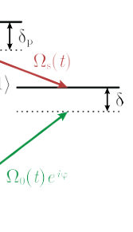
<figcaption class="paper-figure-caption"><b>Fig 1.</b> Figure 1: Three-level system in a ∆configuration.</figcaption>
</figure>
<figure class="paper-figure-card">
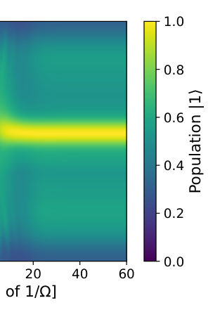
<figcaption class="paper-figure-caption"><b>Fig 2.</b> Figure 2: Time- and phase-resolved population of the target state |1⟩during the STIRAP protocol, obtained under the operational two-photon detuning condition of Eq. (9). The Gaussian pulses given by Eq. (10) are taken with equal peak amplitudes, Ωmax p = Ωmax s = Ω. Simulation parameters: ΩT = 15, τ = 0.7 T, and δp = 0.</figcaption>
</figure>
<figure class="paper-figure-card">
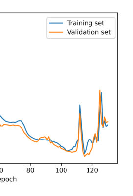
<figcaption class="paper-figure-caption"><b>Fig 3.</b> Figure 3: Training progress. The value of the cost function, given by Eq. (14), for the training sets (solid blue line) and the validation sets (solid orange line) vs. the number of epochs of training.</figcaption>
</figure>
<figure class="paper-figure-card">
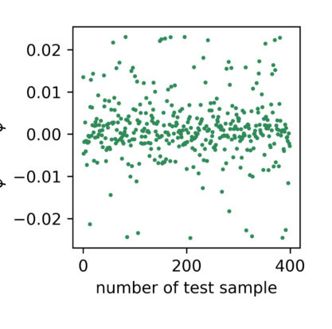
<figcaption class="paper-figure-caption"><b>Fig 4.</b> Figure 4: Performance of the neural network on the test dataset. Left: predicted phase versus the corresponding target value (the true value). Right: prediction accuracy as a function of the test sample index.</figcaption>
</figure>
</div>

<p><strong>Summary.</strong> The research proposes using machine learning to sense the plaquette phase in a three-level atomic system by analyzing how this unknown phase perturbs STIRAP population transfer efficiencies. By training an MLP on simulated data, the authors demonstrate that these accessible quantum control measurements encode enough information to accurately reconstruct the underlying gauge-invariant phase.</p>
<p><strong>Why it may be interesting.</strong> This work provides a concrete, modern example of leveraging machine learning in quantum physics—specifically turning a difficult-to-measure physical parameter (a gauge phase) into a measurable diagnostic signal via controlled dynamics.</p>
<details>
<summary>Detailed structure</summary>
<p><strong>Main problem.</strong> The paper addresses the quantum sensing of the plaquette phase ($\phi$) within a three-level $\Delta$ system, which is a gauge-invariant quantity affecting system dynamics.</p>
<p><strong>Main result.</strong> A Multi-Layer Perceptron (MLP) trained on simulated STIRAP population transfer efficiencies can accurately reconstruct the unknown plaquette phase with high fidelity.</p>
<p><strong>Method.</strong> The methodology involves framing the problem as an inverse mapping, using supervised machine learning to predict $\phi$ from multiple measured quantum control observables.</p>
<p><strong>Model / system.</strong> The system is a three-level $\Delta$-type atomic configuration described by a Hamiltonian that includes the unknown plaquette phase. The dynamics are probed using Stimulated Raman Adiabatic Passage (STIRAP) protocols.</p>
<p><strong>Key observables.</strong> Stimulated Raman Adiabatic Passage (STIRAP) population transfer efficiencies ($\eta$), which depend non-trivially on the plaquette phase $\phi$.</p>
<p><strong>Important parameters / regimes.</strong> The plaquette phase $\phi$, system coupling strengths ($\Omega_0, \Omega_p, \Omega_s$), and detuning parameters.</p>
<p><strong>Assumptions / limitations.</strong> It is assumed that the STIRAP efficiency measurements provide sufficient information to uniquely determine the unknown gauge-invariant phase $\phi$.</p>
<p><strong>Figures summary.</strong> Figures illustrate the three-level system setup; one shows the dependence of STIRAP efficiency on $\phi$, and later figures demonstrate the convergence and test performance of the MLP model in reconstructing the true phase.</p>
<p><strong>Paper structure.</strong> The paper first introduces the physical model and the concept of the plaquette phase. It then details how this phase breaks Coherent Population Trapping (CPT) and influences STIRAP dynamics. The core is the development and training of an MLP using simulated data derived from these dynamic measurements to achieve phase estimation.</p>
</details>
<details>
<summary>Abstract</summary>
<p>We propose a machine-learning-empowered approach to the quantum sensing of the plaquette phase, a gauge-invariant quantity arising in three-level $Δ$ systems. This phase profoundly affects the system dynamics, breaking coherent population trapping and inducing a non-trivial phase dependence of the dynamics. We demonstrate that a multi-layer perceptron (MLP), trained in a supervised-learning framework, can accurately estimate the plaquette phase from STImulated Raman Adiabatic Passage (STIRAP) population transfer efficiencies measured under different driving conditions, which provide experimentally accessible observables. Our results highlight how the combination of coherent control and machine learning (ML) enables effective phase identification in closed-loop quantum systems, opening new perspectives for quantum technologies, specifically quantum sensing applications including synthetic gauge fields.</p>
</details>
<p><sub><a href="#top">↑ back to top</a></sub></p>

<p><a id="paper-2607.14755"></a></p>
<h3 id="moment-optimization-in-the-navascues-pironio-acin-hierarchy"><a href="http://arxiv.org/abs/2607.14755v1">Moment Optimization in the Navascués-Pironio-Acín Hierarchy</a></h3>
<p><strong>Authors:</strong> Francesco Flora, Losel Matos, Tim Heightman, Tamás Kriváchy, Adan Garriga, Antonio Acín<br>
<strong>Type:</strong> theory · <strong>Category:</strong> quantum information and computing · <strong>PDF:</strong> <a href="https://arxiv.org/pdf/2607.14755v1">https://arxiv.org/pdf/2607.14755v1</a><br>
<strong>Analysis basis:</strong> full PDF text, analyzed in chunks
<strong>Topic relevance:</strong> <code>analog quantum simulation</code> <strong>2/5</strong> · <code>entanglement &amp; information structure</code> <strong>2/5</strong> · <code>Keldysh / 2PI / non-Gaussian methods</code> <strong>1/5</strong> · <code>methods for driven-dissipative</code> <strong>1/5</strong></p>
<div class="figure-strip-hint">↔ Scroll figures horizontally</div>
<div class="paper-figures-scroll">
<figure class="paper-figure-card">
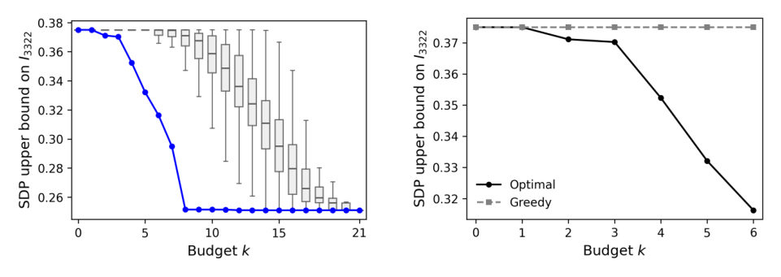
<figcaption class="paper-figure-caption"><b>Fig 1.</b> Figure 1: Complete distribution of I3322 relaxation values across all 221 moment subsets, stratified by Hamming weight k. The structural transition in the range 5 &lt; k ≤19 — where distributions are widest and the optimal value improves most rapidly — identifies the combinatorially active regime of the landscape. The wide spread of bound values at each k, with subsets of the same size spanning nearly the full range from the NPA1 to the NPA2 bound, is a direct signature of strong higher-order interactions among moments. (a) Distribution of relaxation values at each Hamming weight k over all 21 k  subsets. Each box spans the interquartile range (Q1–Q3), with the median marked by the interior...</figcaption>
</figure>
<figure class="paper-figure-card">
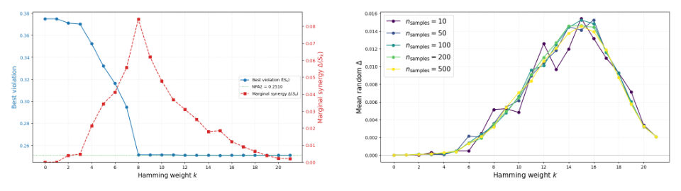
<figcaption class="paper-figure-caption"><b>Fig 2.</b> Figure 2: Synergy as a diagnostic for subset saturation. Left: Best violation f(Sk) (blue, left axis) and marginal synergy ∆(Sk) (red, right axis) as a function of k, with Sk taken as the globally optimal k-subset of the I3322 NPA1→NPA2 adding set. The cost curve flattens abruptly at k = 8 as the NPA2 bound is reached (green dotted line), and the synergy attains its maximum ∆(S⋆ 8) ≈0.084 at exactly the same step — every element of the saturating 8-subset is essential, no single removal preserves saturation. Past k = 8 additional elements are redundant and the synergy decays smoothly toward zero. Right: Convergence of the statistical synergy estimate in nsamples. Mean random-subset synergy...</figcaption>
</figure>
<figure class="paper-figure-card">

<figcaption class="paper-figure-caption"><b>Fig 3.</b> Figure 3: Individual method performance on the I3322 moment-selection problem. Each panel shows the mean I3322 violation (colored curve with markers) as a function of k, averaged over 30 independent runs, with the shaded band indicating one standard deviation. The solid black curve is the ground-truth optimal path; the dashed black curve is the greedy baseline. (a) PT (R = 5, T ∈[0.1, 2.0], 5 000 SDP evaluations) tracks the optimal curve closely from k ≈3, with a moderate variance band that narrows as k passes the transition region. (b) RBM (500 gradient steps, ADAM η = 0.01, 501 SDP evaluations) achieves close tracking of the optimal path, reaching the NPA2 convergence value at k ≈9–10...</figcaption>
</figure>
<figure class="paper-figure-card">
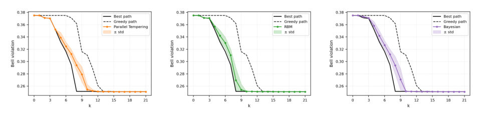
<figcaption class="paper-figure-caption"><b>Fig 4.</b> Figure 4b shows the normalized runtime of each method as a function of k, expressed relative to the greedy algorithm and plotted on a logarithmic scale. The brute-force curve peaks at 21 10  = 352 716 normalized evaluations at k = 10 — several orders of magnitude above all three methods across the full range. BO maintains the lowest runtime throughout, remaining within one to two orders of magnitude of the greedy baseline. This reflects its fundamental design principle; with 250 SDP evaluations, the surrogate amortizes the cost of expensive function calls, and the dominant overhead is model fitting and candidate sampling rather than SDP evaluation. The RBM occupies an intermediate...</figcaption>
</figure>
<figure class="paper-figure-card">
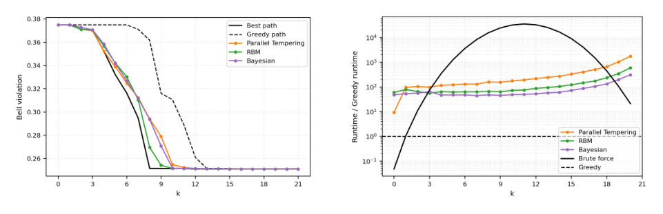
<figcaption class="paper-figure-caption"><b>Fig 5.</b> Figure 4: Solution quality and computational cost of the three optimization methods on the I3322 moment- selection problem. (a) Mean I3322 violation achieved by PT (orange), RBM (green), and BO (purple) as a function of k, averaged over 30 independent runs. The solid black curve is the ground-truth optimal path from exhaustive enumeration; the dashed black curve is the greedy baseline. PT tracks the optimum closely from k ≈3; the RBM achieves a substantially closer approach to optimal throughout the hard transition regime despite ten times fewer SDP evaluations (see Fig. 5). BO converges later but requires a factor of 20 fewer SDP evaluations than PT. (b) Runtime of each method normalized...</figcaption>
</figure>
</div>

<p><strong>Summary.</strong> This paper addresses the computational bottleneck of moment optimization in the NPA hierarchy by treating moment selection as a combinatorial search problem. The authors develop and compare advanced machine learning and sampling techniques (RBM, BO) that efficiently select optimal subsets of moments. This establishes a scalable framework for obtaining tighter, certified bounds on quantum correlations and energy gaps.</p>
<p><strong>Why it may be interesting.</strong> This work provides a crucial computational tool for rigorously bounding physical quantities in quantum systems where exact calculation is intractable due to high dimensionality or non-commutativity.</p>
<details>
<summary>Detailed structure</summary>
<p><strong>Main problem.</strong> The core problem is optimizing moment selection within the Navascués-Pironio-Acín (NPA) hierarchy to efficiently bound solutions to noncommutative polynomial optimization problems.</p>
<p><strong>Main result.</strong> The developed framework allows for scalable moment selection, significantly improving certified bounds on quantum correlations and ground-state energies by orders of magnitude compared to greedy or full brute-force methods.</p>
<p><strong>Method.</strong> The authors reframe moment selection as a combinatorial subset selection problem and compare three optimization techniques: Parallel Tempering (PT), RBM-based Reinforcement Learning, and Bayesian Optimization (BO).</p>
<p><strong>Model / system.</strong> Applications include bounding Bell inequalities (e.g., $I_{3322}$) and certifying ground-state energies for many-body Hamiltonians like the one-dimensional Heisenberg spin chain.</p>
<p><strong>Key observables.</strong> Bound quality (gap $\Delta C$), synergy diagnostic ($\Delta(S_k)$), and convergence behavior across different Bell inequalities.</p>
<p><strong>Important parameters / regimes.</strong> Computational budget (fixed resource constraint) and moment selection level ($n$ in the NPA hierarchy).</p>
<p><strong>Assumptions / limitations.</strong> The NPA relaxation sequence provides an outer approximation to the true quantum expectation value, but its computational cost grows combinatorially with the number of moments.</p>
<p><strong>Figures summary.</strong> Figures compare optimization strategies (PT) for energy and observable gap certification on the Heisenberg chain, showing that warm-starting from local solutions significantly improves bounds for long-range correlations.</p>
<p><strong>Paper structure.</strong> The paper establishes the NPA framework, identifies moment selection as a combinatorial challenge, introduces synergy diagnostics, and then develops/compares advanced optimization algorithms (PT, RBM, BO) using quantum information benchmarks like Bell inequalities and spin chains.</p>
</details>
<details>
<summary>Abstract</summary>
<p>The Navascués-Pironio-Acín (NPA) hierarchy provides a convergent sequence of semidefinite programming (SDP) relaxations for noncommutative polynomial optimisation, ubiquitous in quantum physics. However, its practical applicability is limited by the combinatorial growth in operator moments required at each level. Since not all moments contribute equally to bound tightness, selecting moments within a fixed computational budget is a relevant problem.   We reframe moment selection as combinatorial subset selection and show it is governed by strong higher-order synergistic interactions among moments, quantified through a marginal synergy diagnostic adapted from complex systems theory. We develop and compare three optimisation methods: Parallel Tempering (PT), an RBM-based reinforcement learning policy, and Bayesian Optimisation (BO). On the $I_{3322}$ Bell inequality benchmark, all three substantially outperform greedy approaches at costs around two orders of magnitude below brute force, with the RBM achieving the closest approach to optimal throughout the hard transition regime.   We apply the framework to the 174 Bell inequalities in the $(4,4,2,2)$ scenario, finding heterogeneous convergence behaviour across inequalities, and to the one-dimensional Heisenberg spin chain, demonstrating that physically motivated monomial bases are internally compressible and are not globally optimal in general. A budget-aware search over a broader pool improves certified bounds on long-range correlations by nearly two orders of magnitude. These results establish a scalable framework for moment selection in noncommutative polynomial optimisation, with broad applications across quantum physics and quantum information.</p>
</details>
<p><sub><a href="#top">↑ back to top</a></sub></p>

<p><a id="paper-2607.14819"></a></p>
<h3 id="quantum-remote-implementation-of-hybrid-operations-on-hyperstates-using-hyperentangled-states"><a href="http://arxiv.org/abs/2607.14819v1">Quantum Remote Implementation of Hybrid Operations on Hyperstates Using Hyperentangled States</a></h3>
<p><strong>Authors:</strong> Satish Kumar, Anirban Pathak<br>
<strong>Type:</strong> theory · <strong>Category:</strong> quantum information and computing · <strong>PDF:</strong> <a href="https://arxiv.org/pdf/2607.14819v1">https://arxiv.org/pdf/2607.14819v1</a><br>
<strong>Analysis basis:</strong> full PDF text, analyzed in chunks
<strong>Topic relevance:</strong> <code>quantum measurements</code> <strong>2/5</strong> · <code>entanglement &amp; information structure</code> <strong>1/5</strong> · <code>interference shaping light</code> <strong>1/5</strong> · <code>measurement-induced transitions</code> <strong>1/5</strong> · <code>quantum optics experiment</code> <strong>1/5</strong></p>
<div class="figure-strip-hint">↔ Scroll figures horizontally</div>
<div class="paper-figures-scroll">
<figure class="paper-figure-card">
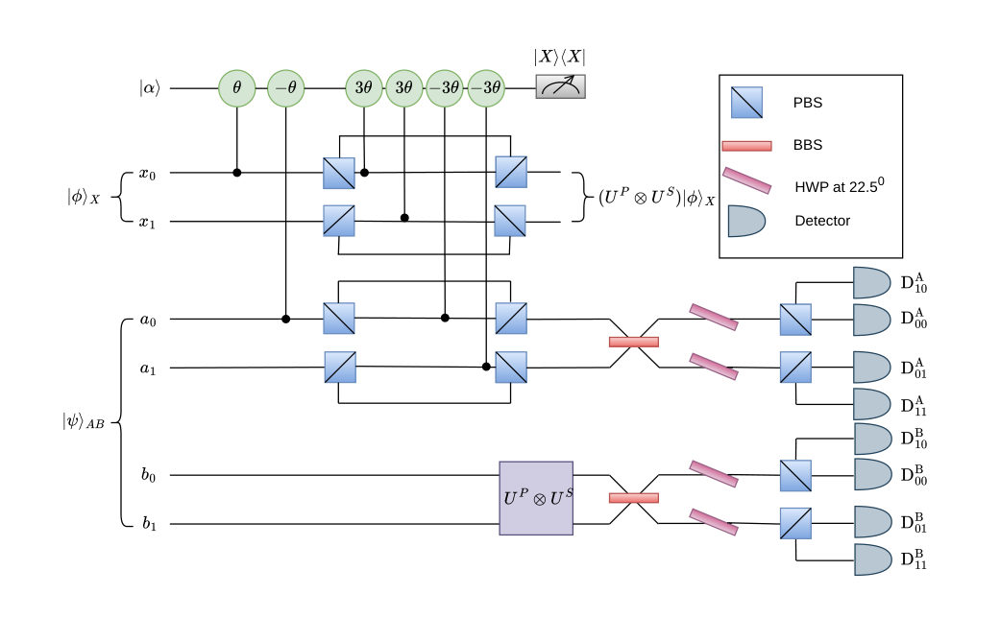
<figcaption class="paper-figure-caption"><b>Fig 1.</b> FIG. 1: (Color Online) The pictorial representation of the QRIO protocol using a hyperentangled state, where both the spatial and polarization DOFs are utilized simultaneously.</figcaption>
</figure>
<figure class="paper-figure-card">
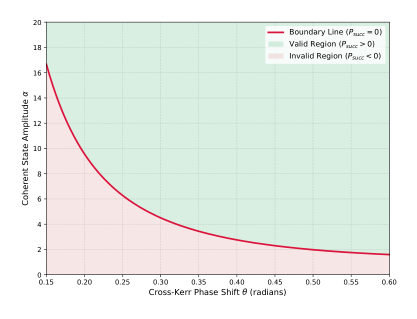
<figcaption class="paper-figure-caption"><b>Fig 2.</b> FIG. 2: (Color online) Parameter region for positive success probability of the proposed QRIO protocol in the (θ, α) plane. The boundary curve (Psucc = 0) separates the valid region ((Psucc &gt; 0), shaded green) from the invalid region ((Psucc &lt; 0), shaded red). For a given cross-Kerr phase shift θ, the coherent state amplitude α must lie above the boundary to ensure a positive success probability.</figcaption>
</figure>
<figure class="paper-figure-card">
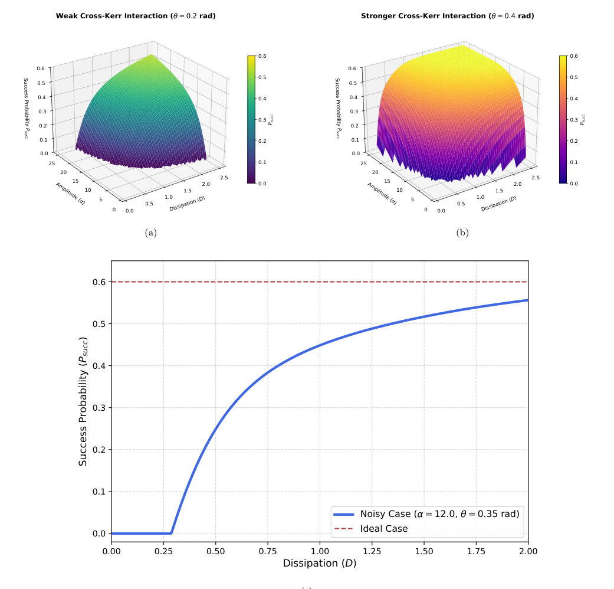
<figcaption class="paper-figure-caption"><b>Fig 3.</b> FIG. 3: (Color online) Effect of coherent state dissipation on the success probability of the proposed QRIO protocol. (a) Three-dimensional variation of the success probability Psucc as a function of the dissipation parameter D and coherent state amplitude α for a weak cross-Kerr phase shift (θ = 0.2 rad). (b) Corresponding success probability landscape for a stronger cross-Kerr phase shift (θ = 0.4 rad). In both cases, larger values of α and weaker dissipation (D →1) enhance the protocol performance. (c) Comparison of the ideal (D = 1) and noisy success probabilities as a function of the dissipation parameter for α = 12 and θ = 0.35 rad, illustrating the degradation in performance caused...</figcaption>
</figure>
</div>

<p><strong>Summary.</strong> This work proposes a quantum remote implementation protocol that operates on two-qubit hyperstates by simultaneously leveraging both polarization and spatial degrees of freedom. The scheme uses cross-Kerr nonlinear interactions and homodyne measurements, demonstrating enhanced performance over previous methods. The analysis rigorously accounts for realistic noise sources like dissipation, confirming the feasibility of hybrid quantum communication.</p>
<p><strong>Why it may be interesting.</strong> It provides a concrete, resource-efficient blueprint for hybrid quantum operation implementation in photonic systems, directly relevant to developing distributed quantum information processing networks.</p>
<details>
<summary>Detailed structure</summary>
<p><strong>Main problem.</strong> The paper addresses the challenge of remotely implementing an arbitrary hybrid quantum operator on a single-photon two-qubit hyperstate.</p>
<p><strong>Main result.</strong> A novel protocol is proposed that successfully utilizes both polarization and spatial degrees of freedom simultaneously, significantly enhancing performance compared to schemes using only one DOF.</p>
<p><strong>Method.</strong> The method involves entangling the unknown state with a shared hyperentangled resource via cross-Kerr nonlinear interactions and subsequent homodyne measurements on a probe coherent state.</p>
<p><strong>Model / system.</strong> The system uses two-qubit hyperentangled states encoded across polarization (H/V) and spatial modes ($x0/x1$). The protocol is realized using linear optical elements and cross-Kerr nonlinear interactions, making it compatible with photonic quantum communication.</p>
<p><strong>Key observables.</strong> Success probability ($P_{	ext{succ}}$), which is analyzed in the presence of measurement errors and dissipation.</p>
<p><strong>Important parameters / regimes.</strong> Cross-Kerr phase shift ($   heta$), coherent state amplitude ($\alpha$), and environmental dissipation rate ($\gamma$).</p>
<p><strong>Assumptions / limitations.</strong> The analysis explicitly models and accounts for two sources of error: finite distinguishability of coherent states during homodyne detection, and coherent state dissipation.</p>
<p><strong>Figures summary.</strong> Figures illustrate the protocol components (Fig. 1), summarize local Pauli operations based on measurement outcomes (Table II), and show 3D landscapes demonstrating how $P_{	ext{succ}}$ is affected by $\alpha$, dissipation ($D$), and $  heta$ (Fig. 2, Fig. 3).</p>
<p><strong>Paper structure.</strong> The paper details the protocol steps: initial state transformation using cross-Kerr interaction, measurement on an auxiliary coherent state to generate entanglement, conditional local operations, application of the desired operator $U$, and final recovery via Pauli corrections.</p>
</details>
<details>
<summary>Abstract</summary>
<p>Quantum remote control, also known as quantum remote implementation of an operator (QRIO), enables the remote manipulation of an arbitrary quantum state by implementing a desired quantum operation at a distant location. Significant progress has recently been made in developing QRIO protocols and their variants. Most existing schemes employ hyperentangled states where entanglement is shared across multiple degrees of freedom (DOFs). However, these protocols typically exploit only one degree of freedom at a time. In this work, we propose a QRIO protocol that simultaneously utilizes the polarization and spatial DOFs of a two-qubit hyperentangled state to remotely implement an arbitrary hybrid operator on an unknown single-photon two-qubit hyperstate. The shared hyperentangled resource is realized using the polarization and spatial modes of photons, while the protocol is constructed using linear optical elements and cross-Kerr nonlinear interactions to facilitate effective photon-photon coupling. Furthermore, the effects of measurement errors arising from finite coherent state distinguishability and coherent state dissipation are analyzed and the corresponding success probability of the protocol is evaluated. The results demonstrate that an appropriate choice of the cross-Kerr phase shift and coherent state amplitude significantly enhances the protocol performance, making the proposed scheme a promising candidate for hybrid quantum communication and distributed quantum information processing.</p>
</details>
<p><sub><a href="#top">↑ back to top</a></sub></p>

<p><a id="paper-2607.15248"></a></p>
<h3 id="fermiology-of-the-kagome-compound-lunb6sn6-probed-by-de-haas-van-alphen-oscillations"><a href="http://arxiv.org/abs/2607.15248v1">Fermiology of the kagome compound LuNb6Sn6 probed by de Haas-van Alphen oscillations</a></h3>
<p><strong>Authors:</strong> Tucker Beekmann, Caue Kaufmann Ribeiro, Kyryl Shtefiienko, Jiaqiang Yan, Brenden R. Ortiz, Christopher A. Mizzi, Keshav Shrestha<br>
<strong>Type:</strong> both · <strong>Category:</strong> strongly correlated electrons · <strong>PDF:</strong> <a href="https://arxiv.org/pdf/2607.15248v1">https://arxiv.org/pdf/2607.15248v1</a><br>
<strong>Analysis basis:</strong> full PDF text, analyzed in chunks
<strong>Topic relevance:</strong> <code>driven-dissipative phase transition</code> <strong>2/5</strong> · <code>Kondo &amp; dissipative impurity</code> <strong>1/5</strong> · <code>analog quantum simulation</code> <strong>1/5</strong> · <code>non-equilibrium dynamics</code> <strong>1/5</strong></p>
<div class="figure-strip-hint">↔ Scroll figures horizontally</div>
<div class="paper-figures-scroll">
<figure class="paper-figure-card">
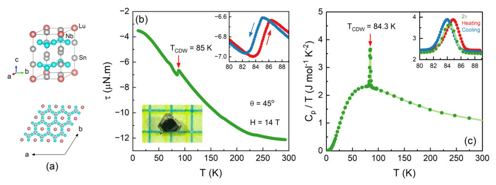
<figcaption class="paper-figure-caption"><b>Fig 1.</b> FIG. 1. (a) Crystal structure of LuNb6Sn6: the unit cell (top) and top view (bottom), highlighting the Nb kagome network. (b) Temperature dependence of the magnetic torque at fixed field magnitude and direction for a LuNb6Sn6 single crystal (Sample S1). A clear anomaly at TCDW = 85 K (arrow) indicates the onset of CDW order. Upper inset: zoomed-in view near TCDW, showing the transition and hysteresis between cooling and heating curves. Lower inset: Optical image of one of the measured single crystals. (c) Temperature dependence of the heat capacity of LuNb6Sn6. A pronounced anomaly at 84.3 K marks the CDW transition. Inset: zoomed-in view near TCDW highlighting the transition and the...</figcaption>
</figure>
<figure class="paper-figure-card">
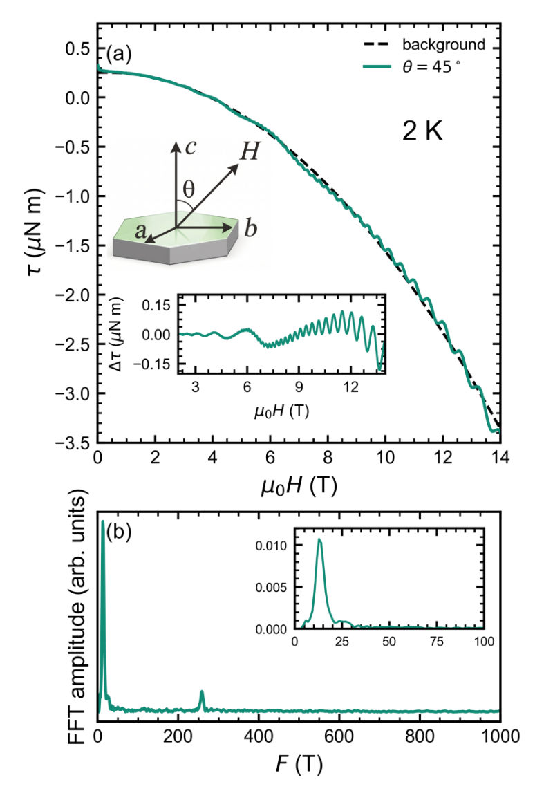
<figcaption class="paper-figure-caption"><b>Fig 2.</b> FIG. 2. (a) Torque τ as a function of magnetic field H for a LuNb6Sn6 single crystal (Sample S1) measured at 2 K with the field applied at an angle θ = 45◦. τ(H) exhibits clear dHvA oscillations above 2 T. The black, dashed line represents a second-order polynomial fit to the background. Inset: schematic illustration of the tilt angle and background-subtracted torque signal showing the dHvA oscillations. (b) FFT spectrum of the oscillatory signal shown in (a). Two dominant frequencies are observed at Fα = 12.8 T and Fβ = 259 T.</figcaption>
</figure>
<figure class="paper-figure-card">
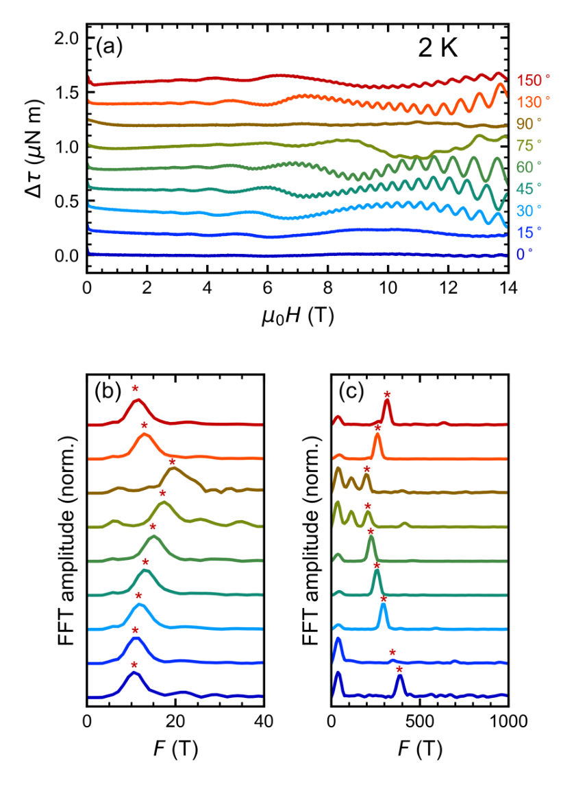
<figcaption class="paper-figure-caption"><b>Fig 3.</b> FIG. 3. (a) Background-subtracted angle-dependent torque data for a LuNb6Sn6 single crystal (Sample S1) at 2 K. dHvA oscillations are observed for all tilt angles. (b) Frequency spectra in the low-frequency range with FFT analysis performed between 2–14 T. (c) Frequency spectra in the high-frequency range with FFT analysis performed between 8–14 T. In both (b) and (c) FFT amplitudes have been normalized by the maximum peak amplitude and offset by a constant to emphasize the angular dependence. Frequencies marked with an asterisk are the focus of the quantitative analysis.</figcaption>
</figure>
<figure class="paper-figure-card">
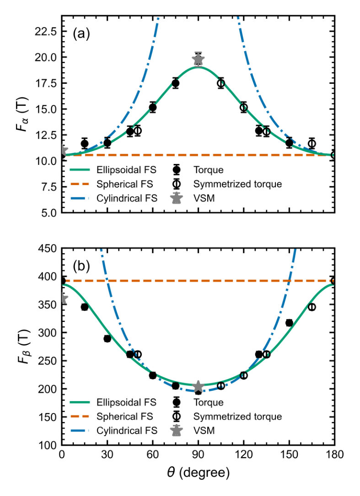
<figcaption class="paper-figure-caption"><b>Fig 4.</b> FIG. 4. Angle dependence of (a) Fα and (b) Fβ for LuNb6Sn6 (Sample S1). Solid circles represent data obtained from torque measurements and open circles are symmetrized data. Gray stars correspond to VSM measurements. The solid curves in both panels represent the frequency–angle relation expected for an ellipsoidal FS, indicating that both Fα and Fβ originate from ellipsoidal Fermi pockets. The dashed lines are expected frequency-angle relations for spherical or cylindrical FS. The values and uncertainties of the frequencies in both panels are from fitting a pseudo-Voigt function for each peak. All data acquired at T = 2 K.</figcaption>
</figure>
<figure class="paper-figure-card">
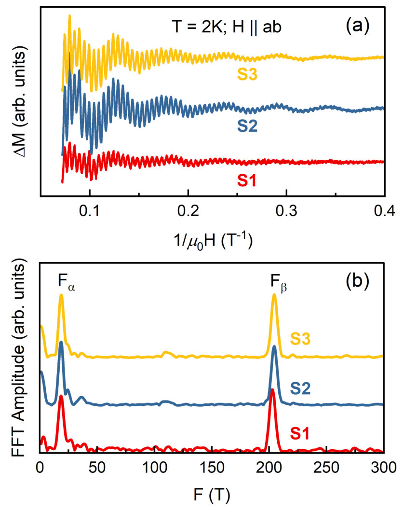
<figcaption class="paper-figure-caption"><b>Fig 5.</b> FIG. 5. (a) Background-subtracted magnetization as a function of inverse magnetic field with H ∥ab for three LuNb6Sn6 samples (S1, S2, and S3) measured at 2 K. (b) In all three samples, FFTs of the background-subtracted magnetization reveal two main quantum oscillation frequencies near Fα ≈19 T and Fβ ≈204 T, emphasizing the reproducibility of the results. The magnetization data and FFTs have been offset by constants for visual clarity.</figcaption>
</figure>
</div>

<p><strong>Summary.</strong> This work uses de Haas-van Alphen oscillations and thermal measurements on the kagome metal LuNb6Sn6 to map its Fermi surface topology. The research reveals two distinct electronic pockets whose behavior is significantly altered by a first-order Charge Density Wave transition. By combining quantum oscillation data with DFT calculations, the authors establish that CDW reconstruction dictates the material's ground state electronic structure.</p>
<p><strong>Why it may be interesting.</strong> While focused on condensed matter magnetism/transport, the interplay between symmetry breaking (CDW formation) and the resulting changes in electronic band structure and topological features (Berry phase evidence) is highly relevant to understanding emergent quantum phases in strongly correlated systems.</p>
<details>
<summary>Detailed structure</summary>
<p><strong>Main problem.</strong> To investigate the Fermi surface topology and electronic structure of the kagome metal LuNb6Sn6, particularly in relation to its Charge Density Wave (CDW) transition.</p>
<p><strong>Main result.</strong> The study confirms two major quantum oscillation frequencies ($F_\alpha$ and $F_eta$) originating from ellipsoidal Fermi pockets, while also showing that CDW-induced Fermi surface reconstruction is crucial for understanding the ground state electronic structure.</p>
<p><strong>Method.</strong> A combination of experimental measurements (dHvA oscillations via torque magnetometry, heat capacity) and theoretical calculations (DFT band structure analysis) was employed.</p>
<p><strong>Model / system.</strong> The physical system is the kagome compound LuNb6Sn6. The investigation focuses on its electronic properties near the Fermi level, particularly how these are modified by a temperature-dependent CDW transition.</p>
<p><strong>Key observables.</strong> dHvA frequencies ($F_\alpha \approx 20	ext{ T}, F_eta \approx 200	ext{ T}$), CDW transition temperatures ($ ext{T}_{    ext{CDW}} = 85  ext{ K}$), and the angular dependence of quantum oscillation frequencies.</p>
<p><strong>Important parameters / regimes.</strong> Low temperature (2 K), magnetic fields up to 14 T, and electronic parameters derived from Lifshitz-Kosevich analysis ($m^*$, $T_D$).</p>
<p><strong>Assumptions / limitations.</strong> The primary assumption is that the observed quantum oscillations are governed by well-defined Fermi surface pockets whose topology can be mapped using standard solid-state physics models (e.g., ellipsoidal FS).</p>
<p><strong>Figures summary.</strong> Figures show thermal anomalies confirming a first-order CDW transition, dHvA oscillations in torque vs. H, FFT spectra identifying two main frequencies, and plots showing the angle dependence of these frequencies consistent with ellipsoidal pockets.</p>
<p><strong>Paper structure.</strong> The paper proceeds by characterizing the material's phase transitions (CDW) using thermal measurements, followed by detailed quantum oscillation measurements to map the Fermi surface topology, and finally comparing experimental findings against first-principles electronic structure calculations.</p>
</details>
<details>
<summary>Abstract</summary>
<p>We report a detailed de Haas-van Alphen (dHvA) study of the recently discovered kagome metal LuNb6Sn6 using torque magnetometry, magnetization, and heat-capacity measurements. Temperature-dependent torque and heat-capacity data reveal a charge density wave (CDW) transition at T_CDW = 85 K. The thermal hysteresis observed in both measurements establishes the first-order nature of the transition. Quantum oscillation measurements identify two major dHvA frequencies: F_alpha ~ 20 T and F_beta ~ 200 T, and their angular dependence is consistent with ellipsoidal Fermi surface (FS) pockets. Landau fan diagram analysis reveals evidence for a nontrivial Berry phase associated with the F_alpha pocket, indicating possible nontrivial electronic topology in LuNb6Sn6. Analysis of the temperature and magnetic field dependence of the oscillations using the Lifshitz-Kosevich formula yields electronic parameters that indicate anisotropic quantum transport properties. First-principles calculations provide further insight into the electronic structure, revealing Dirac-like band crossings, a flat band, and multiple van Hove singularities near the Fermi level. Our calculations based on the pristine phase cannot fully reproduce the experimentally observed quantum oscillation frequencies, suggesting that CDW-induced FS reconstruction plays a crucial role in the ground-state electronic structure of LuNb6Sn6. These results provide new insight into the FS topology and electronic structure of LuNb6Sn6, enriching our understanding of the electronic properties of kagome materials.</p>
</details>
<p><sub><a href="#top">↑ back to top</a></sub></p>

<p><a id="paper-2607.15009"></a></p>
<h3 id="ridge-spin-layer-coupling-and-emergent-ridgetronics-in-2d-altermagnets"><a href="http://arxiv.org/abs/2607.15009v1">Ridge-Spin-Layer Coupling and Emergent Ridgetronics in 2D Altermagnets</a></h3>
<p><strong>Authors:</strong> Mu Tian, Run-Wu Zhang, Chaoxi Cui, Zhi-Ming Yu, Yugui Yao<br>
<strong>Type:</strong> theory · <strong>Category:</strong> strongly correlated electrons · <strong>PDF:</strong> <a href="https://arxiv.org/pdf/2607.15009v1">https://arxiv.org/pdf/2607.15009v1</a><br>
<strong>Analysis basis:</strong> full PDF text, analyzed in chunks
<strong>Topic relevance:</strong> <code>analog quantum simulation</code> <strong>2/5</strong> · <code>exotic spin models in light-matter</code> <strong>1/5</strong> · <code>non-equilibrium dynamics</code> <strong>1/5</strong> · <code>spintronics-quantum-optics interface</code> <strong>1/5</strong></p>
<div class="figure-strip-hint">↔ Scroll figures horizontally</div>
<div class="paper-figures-scroll">
<figure class="paper-figure-card">
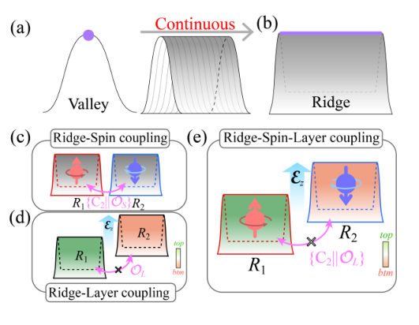
<figcaption class="paper-figure-caption"><b>Fig 1.</b> Figure 1. (a) Zero-dimensional valley (localized extremum) versus (b) ridge state (macroscopically continuous along ki). (c) Two ridges R1 and R2 are connected by {C2||OS} and exhibit opposite spin polarization in the nonrelativistic case. (d) Two ridges R1 and R2 have opposite layer polarization, connected by OL, and tunable via an out-of-plane electric field Ez. (e) Combining (c) and (d): R1 and R2 are linked by {C2||OL}, with opposite spin polarization (nonrelativistic) and opposite layer polarization.</figcaption>
</figure>
<figure class="paper-figure-card">
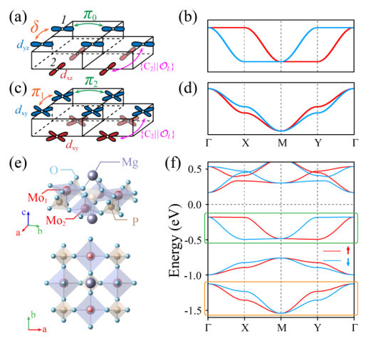
<figcaption class="paper-figure-caption"><b>Fig 2.</b> Figure 2. (a) Schematic lattice model for RSLC based on dxz/dyz hopping. (b) Tight-binding band structure corre- sponding to the lattice in (a). (c) Schematic lattice model based on dxy hopping. (d) Tight-binding band structure cor- responding to the lattice in (c). (e) Crystal structure of mono- layer Mg2Mo2(PO5)2 in side and top views. (f) Nonrelativis- tic band structure of monolayer Mg2Mo2(PO5)2. Red and blue lines denote spin-up and spin-down channels, respec- tively. The green box highlights the dxz/dyz hopping (ridge states) near the Fermi level, while the orange box marks the dxy-based states.</figcaption>
</figure>
<figure class="paper-figure-card">
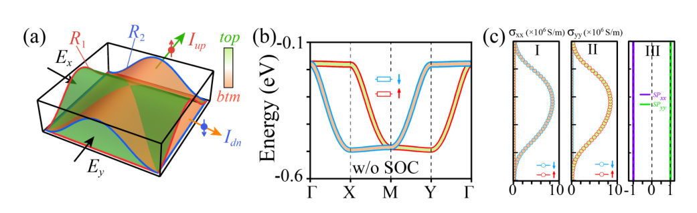
<figcaption class="paper-figure-caption"><b>Fig 3.</b> Figure 3. (a) Illustration of layer-dependent Q1D spin transport. (b) Layer-resolved analysis of the ridge states [highlighted by the green box in (b)]. Red and blue edges denote spin-up and spin-down components, respectively, while the fill color indicates layer polarization P(k). The inset shows the first Brillouin zone with high-symmetry points marked. (c) From left to right: (I) calculated electric conductivity σxx for up-spin (red-edged circles) and down-spin (blue-edged circles) channels in monolayer Mg2Mo2(PO5)2; (II) calculated electric conductivity σyy for up-spin and down-spin channels; (III) calculated spin polarization of conductivities, SPxx and SPyy. The filling color of the...</figcaption>
</figure>
<figure class="paper-figure-card">
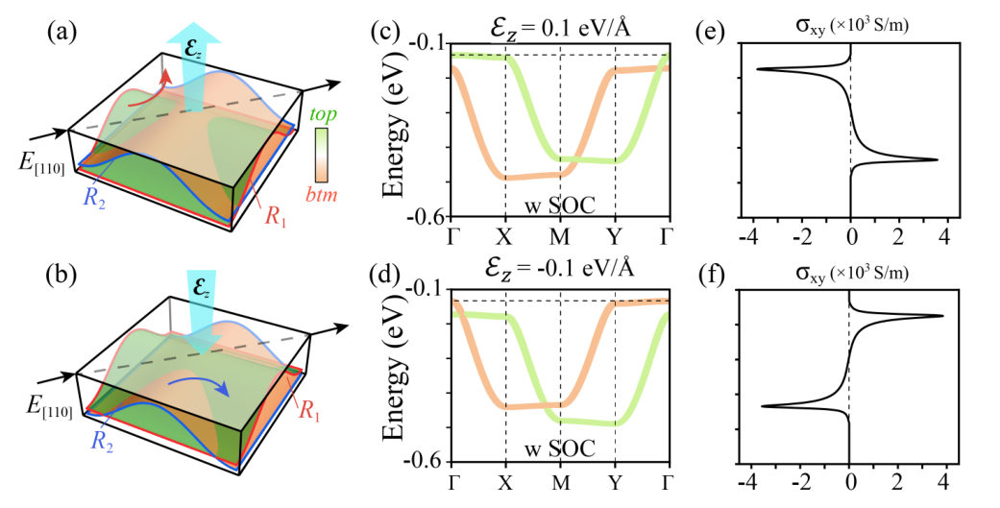
<figcaption class="paper-figure-caption"><b>Fig 4.</b> Figure 4. (a,b) Illustration of the layer-dependent electric Hall effect under opposite electric fields Ez. (c,d) Relativistic ridge state of monolayer Mg2Mo2(PO5)2 under applied electric fields Ez = 0.1 and -0.1 eV/˚A applied separately. (e,f) Anomalous hall conductivity of monolayer Mg2Mo2(PO5)2 under the same field conditions as in (c,d).</figcaption>
</figure>
</div>

<p><strong>Summary.</strong> This paper introduces 'ridgetronics,' a novel platform for electrical control over charge transport in 2D altermagnets. It achieves this by exploiting Ridge-Spin-Layer Coupling (RSLC), which locks electronic states into continuous, dispersionless lines in momentum space. The resulting material properties allow for highly directional, spin-polarized currents and electric field-tunable Hall effects.</p>
<p><strong>Why it may be interesting.</strong> While focused on solid-state magnetism, the concept of controlling electronic states via symmetry constraints (Spin Layer Group Theory) and achieving highly directional, tunable current flow echoes principles used in designing quantum devices where coupling between multiple degrees of freedom is key.</p>
<details>
<summary>Detailed structure</summary>
<p><strong>Main problem.</strong> The research aims to extend valleytronics by developing 'ridgetronics,' which controls directional current flow using continuous lines of electronic states in momentum space.</p>
<p><strong>Main result.</strong> Ridge-Spin-Layer Coupling (RSLC) is established in 2D altermagnets, allowing electric field control over spin-filtered transport and inducing an Electric Hall Effect.</p>
<p><strong>Method.</strong> The work uses symmetry group theory to derive conditions for ridge states and employs tight-binding models combined with band structure calculations.</p>
<p><strong>Model / system.</strong> The system is based on 2D altermagnets on a square lattice, featuring continuous lines of dispersionless electronic states (ridges) coupled to spin polarization and atomic sublayers. The Hamiltonian describes this coupling using specific orbital hopping terms.</p>
<p><strong>Key observables.</strong> Direction-discriminating currents, layer-selective switching via electric field ($E_z$), spin-polarized conductivities ($\sigma_{xx}, \sigma_{yy}$), and the Electric Hall Response ($\sigma_{xy}$).</p>
<p><strong>Important parameters / regimes.</strong> The coupling strength (RSLC) is crucial; the system must be altermagnetic with specific symmetry operations $\{C_2||O_L\}$ connecting orthogonal ridges.</p>
<p><strong>Assumptions / limitations.</strong> The analysis assumes a 2D square lattice structure and relies on the existence of specific spin-layer group symmetries to support the coupling mechanism.</p>
<p><strong>Figures summary.</strong> Figures illustrate the transition from discrete valleys to continuous ridges, show band structures derived from tight-binding models for candidate materials like Mg2Mo2(PO5)2, and demonstrate layer-dependent Q1D spin transport and EHE effects.</p>
<p><strong>Paper structure.</strong> The paper progresses by first defining the concept of ridgetronics via RSLC in altermagnets. It then uses symmetry analysis to identify suitable candidate materials ($    ext{Mg}_2   ext{Mo}_2(  ext{PO}_5)_2$, etc.). Finally, it details how electric fields control spin-polarized transport and induce novel electrical responses.</p>
</details>
<details>
<summary>Abstract</summary>
<p>Extending valleytronics from discrete points to continuous lines in momentum space transforms dispersionless bands into a controllable degree of freedom. Here we introduce ridge--spin--layer coupling (RSLC) in two-dimensional (2D) altermagnets, where a one-dimensional continuous line of dispersionless electronic states (a ridge) in momentum space locks to both spin polarization and atomic sublayer. This ridge-induced quenching of kinetic energy mimics flat-band physics, yet crucially, RSLC grants external control, allowing for layer-selective switching of ridge orientation in reciprocal space, spin-filtered transport in real space, and a distinct electric Hall response. Guided by collinear spin layer group symmetry, we identify three 2D candidate materials, namely Mg$_2$Mo$_2$(PO$_5$)$_2$, Ca(FeP)$_2$, and Mg$_2$V$_2$(SO$_5$)$_2$, each featuring a crossed-ridge structure with two ridges, one per spin channel and sublayer. Our work establishes ridgetronics as a controllable platform for direction-discriminating currents, bridging dispersionless bands with multifunctional device operation.</p>
</details>
<p><sub><a href="#top">↑ back to top</a></sub></p>

<p><a id="paper-2607.14518"></a></p>
<h3 id="structure-aware-variational-state-preparation-for-quantum-basket-option-pricing"><a href="http://arxiv.org/abs/2607.14518v1">Structure-Aware Variational State Preparation for Quantum Basket Option Pricing</a></h3>
<p><strong>Authors:</strong> Dongwoo Kim, Zhenyu Cui, Daniel K. Park, Chihoon Lee<br>
<strong>Type:</strong> both · <strong>Category:</strong> quantum information and computing · <strong>PDF:</strong> <a href="https://arxiv.org/pdf/2607.14518v1">https://arxiv.org/pdf/2607.14518v1</a><br>
<strong>Analysis basis:</strong> full PDF text, analyzed in chunks
<strong>Topic relevance:</strong> <code>entanglement &amp; information structure</code> <strong>2/5</strong> · <code>Keldysh / 2PI / non-Gaussian methods</code> <strong>1/5</strong> · <code>analog quantum simulation</code> <strong>1/5</strong> · <code>methods for driven-dissipative</code> <strong>1/5</strong></p>
<div class="figure-strip-hint">↔ Scroll figures horizontally</div>
<div class="paper-figures-scroll">
<figure class="paper-figure-card">
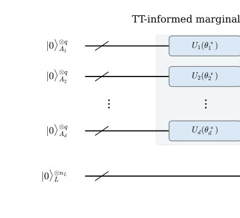
<figcaption class="paper-figure-caption"><b>Fig 1.</b> Fig. 1: General circuit architecture of the marginal-TT loader with a latent depen- dence block. The registers A1, . . . , Ad denote the d asset registers, with q uncertainty qubits assigned to each asset, and L denotes an auxiliary latent register with nL qubits. Ua(θ∗ a) is a TT-informed marginal loader trained to prepare the marginal distribu- tion of asset a. The latent dependence block Udep(ϕ) is then applied to the prepared asset registers and the latent register. If the final state is |Ψϕ⟩, then the asset-register measurement distribution is obtained by measuring in the computational basis and marginalizing over the latent outcome: epϕ(x) = P</figcaption>
</figure>
<figure class="paper-figure-card">
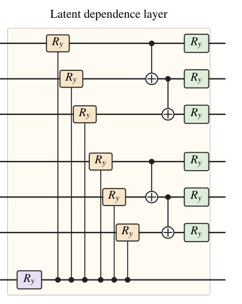
<figcaption class="paper-figure-caption"><b>Fig 2.</b> Fig. 2: Marginal-TT + latent basket-projection loader for a two-asset example with q = 3 uncertainty qubits per asset. TT-informed marginal loaders act locally on each asset register, followed by a latent-conditioned dependence layer. The auxiliary latent qubit z controls rotations on the asset qubits, while CNOT chains are restricted to individual asset registers.</figcaption>
</figure>
<figure class="paper-figure-card">
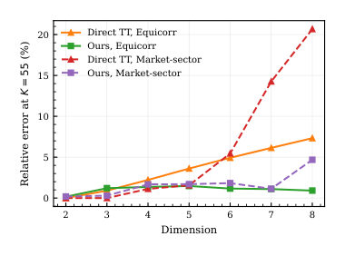
<figcaption class="paper-figure-caption"><b>Fig 3.</b> Fig. 3: Correlated-basket comparison for q = 2 uncertainty qubits per asset. (a) Relative pricing error at strike K = 55. (b) Transpiled state-preparation depth on a logarithmic scale. Exact loading is shown only in panel (b), since it prepares the discretized target state exactly. See Table D1 for the full results.</figcaption>
</figure>
<figure class="paper-figure-card">
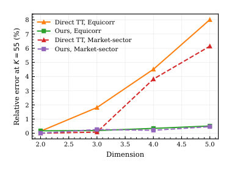
<figcaption class="paper-figure-caption"><b>Fig 4.</b> Fig. 4: Correlated-basket comparison for q = 3 uncertainty qubits per asset. (a) Rel- ative pricing error at K = 55. (b) Transpiled state-preparation depth on a logarithmic scale. Exact loading is shown only in panel (b), since it prepares the discretized target state exactly. See Table D2 for the full results.</figcaption>
</figure>
</div>

<p><strong>Summary.</strong> This paper addresses the resource bottleneck of preparing complex joint states for quantum option pricing by introducing a structure-aware state preparation framework. It uses Tensor-Train ranks to design shallow variational circuits that efficiently encode asset correlations, achieving linear scaling in circuit depth while maintaining high accuracy in estimating basket payoffs.</p>
<p><strong>Why it may be interesting.</strong> While focused on finance, the core technical contribution—using tensor decomposition structure (TT ranks) to efficiently design shallow variational quantum circuits for encoding complex high-dimensional probability distributions—is highly relevant to general quantum simulation tasks in condensed matter physics and quantum chemistry.</p>
<details>
<summary>Detailed structure</summary>
<p><strong>Main problem.</strong> The primary challenge is overcoming the exponential circuit depth required for exact state preparation of high-dimensional joint probability distributions in Quantum Amplitude Estimation (QAE) for multi-asset derivative pricing.</p>
<p><strong>Main result.</strong> The proposed structure-aware framework reduces the state preparation depth from exponential to linear scaling by utilizing Tensor-Train ranks and targeting the basket pushforward distribution directly.</p>
<p><strong>Method.</strong> It employs a variational quantum circuit guided by Tensor-Train (TT) rank information, which is used to design shallow circuits that encode asset marginals locally and model cross-asset dependence via a compact latent block trained on the Basket-CDF objective.</p>
<p><strong>Model / system.</strong> The system models multi-asset financial derivatives (basket options) whose joint probability distribution $p(x)$ must be encoded into an amplitude-encoded quantum state $|\psi_p
angle$ for QAE.</p>
<p><strong>Key observables.</strong> Circuit depth, low-percent basket-pricing errors, and the fidelity of reproducing empirical payoff curves/Basket-CDF values.</p>
<p><strong>Important parameters / regimes.</strong> The number of assets ($d$), the TT ranks ($r_k$) which dictate entanglement structure, and the option strike price ($K$).</p>
<p><strong>Assumptions / limitations.</strong> The method assumes that basket payoffs depend only on the distribution of the basket projection (pushforward) rather than the full joint state. It also treats amplitude estimation as a downstream subroutine.</p>
<p><strong>Figures summary.</strong> Figure 1 illustrates the general circuit architecture combining TT-informed marginal loaders and a latent dependence block for state preparation; Figure E3 shows the successful reproduction of empirical payoff curves and the basket CDF using historical scenario data.</p>
<p><strong>Paper structure.</strong> The paper introduces the bottleneck (state prep depth), proposes the structure-aware framework utilizing TT ranks to guide ansatz design, details the two-part circuit (marginal loaders + latent block trained via Basket-CDF objective), validates this approach with numerical experiments showing linear scaling, and concludes with end-to-end integration studies.</p>
</details>
<details>
<summary>Abstract</summary>
<p>Basket option pricing often relies on Monte Carlo estimation, for which quantum amplitude estimation (QAE) provides a quadratic speed-up. However, the practical benefit of QAE can be limited by the depth of the state-preparation circuit. We propose a structure-aware quantum state-preparation framework for QAE-based basket option pricing. The framework uses tensor-train (TT) rank information to design shallow variational state-preparation circuits. In the independent regime, TT ranks remove unnecessary entangling links from a hardware-efficient ansatz. In correlated basket settings, we instead prepare asset-wise marginals locally and train a compact latent block to match the basket cumulative distribution function. The Basket-CDF objective targets the basket pushforward distribution rather than the full joint state, directly aligning state preparation with basket-dependent payoffs. Numerical experiments show that the proposed circuits replace the exponential state-preparation depth scaling of exact amplitude loading with linear scaling, while maintaining low-percent basket-pricing errors. Additional sampling-based training experiments and an end-to-end QAE integration study support compatibility with sample-estimated training and standard QAE-based pricing workflows.</p>
</details>
<p><sub><a href="#top">↑ back to top</a></sub></p>

<p><a id="paper-2607.14263"></a></p>
<h3 id="autohf-a-general-hartree-fock-solver-utilizing-direct-energy-minimization-with-automatic-differentiation"><a href="http://arxiv.org/abs/2607.14263v1">AutoHF: a general Hartree-Fock solver utilizing direct energy minimization with automatic differentiation</a></h3>
<p><strong>Authors:</strong> Ryan Levy, Brandon Eskridge, Lukas Weber, Miguel A. Morales, Shiwei Zhang<br>
<strong>Type:</strong> theory · <strong>Category:</strong> strongly correlated electrons · <strong>PDF:</strong> <a href="https://arxiv.org/pdf/2607.14263v1">https://arxiv.org/pdf/2607.14263v1</a><br>
<strong>Analysis basis:</strong> full PDF text, analyzed in chunks
<strong>Topic relevance:</strong> <code>analog quantum simulation</code> <strong>2/5</strong> · <code>Keldysh / 2PI / non-Gaussian methods</code> <strong>1/5</strong> · <code>methods for driven-dissipative</code> <strong>1/5</strong></p>
<div class="figure-strip-hint">↔ Scroll figures horizontally</div>
<div class="paper-figures-scroll">
<figure class="paper-figure-card">
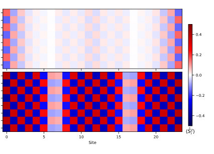
<figcaption class="paper-figure-caption"><b>Fig 1.</b> Figure 1: Left: Measured staggered spin density (−1)ix+iy〈ˆSz i 〉using a UHF autohf calculation of a Hubbard model with edge-pinning at n = 11/12 i.e. 1/12-doping), on a width-8 cylinder, with lengths 24, 48, and 72. The top (U = 1) shows the absence of long range order while the bottom (U = 4) shows consistent order. Right: Explicit spin density 〈ˆSz i 〉of the 24 × 8 cylinders.</figcaption>
</figure>
<figure class="paper-figure-card">
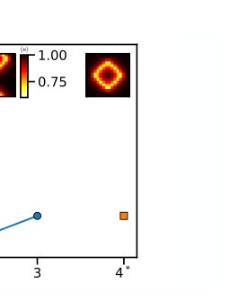
<figcaption class="paper-figure-caption"><b>Fig 2.</b> Figure 2: Energy differences from four different random realizations of a square 16 × 16 Hubbard model with 20 holes and U = 4. The 4th seed was run with an additional energy term to penalize symmetry breaking. Inset: Charge density plots for each of the different realizations.</figcaption>
</figure>
<figure class="paper-figure-card">
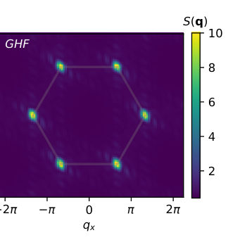
<figcaption class="paper-figure-caption"><b>Fig 3.</b> Figure 3: Measured static spin structure factor S(q) using a UHF autohf (left) and GHF autohf (right) calculation of a 12×12 U = 8 Hubbard model on the triangular lattice at half-filling (n = 1) with periodic boundaries. The UHF solution cannot properly form the 120◦order and creates a frustrated order, while the GHF solution easily obtains the correct 120◦magnetic order.</figcaption>
</figure>
<figure class="paper-figure-card">
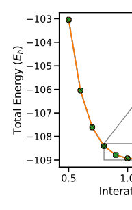
<figcaption class="paper-figure-caption"><b>Fig 4.</b> Figure 4: UHF energy for the bond stretching of N2, using PYSCF (Naive), PYSCF with stability analysis, and autohf for solutions. For autohf, the Coulomb interaction is represented by a Cholesky decomposition. Inset: zoomed in region showing the instability as the molecule dissociates.</figcaption>
</figure>
</div>

<p><strong>Summary.</strong> This paper presents AutoHF, a flexible solver that calculates Hartree-Fock solutions by directly minimizing the variational energy functional. By leveraging automatic differentiation, it bypasses the need to write specialized code for every unique many-body Hamiltonian. This makes advanced electronic structure calculations significantly more general and easier to implement across diverse physical models.</p>
<p><strong>Why it may be interesting.</strong> While focused on condensed matter theory, the reliance on automatic differentiation and gradient-based optimization techniques makes this methodology highly relevant for developing general quantum simulation tools applicable in AMO physics or open quantum systems where complex energy functionals need efficient minimization.</p>
<details>
<summary>Detailed structure</summary>
<p><strong>Main problem.</strong> The core challenge is solving the interacting many-electron problem, which scales exponentially with system size.</p>
<p><strong>Main result.</strong> The authors introduce AutoHF, a general framework that allows direct variational minimization of the energy functional for Hartree-Fock solutions across various Hamiltonians without requiring bespoke code development.</p>
<p><strong>Method.</strong> Instead of traditional Self-Consistent Field (SCF) iterations, the method minimizes the variational energy by optimizing parameters defining the single Slater determinant using automatic differentiation and modern optimization tools.</p>
<p><strong>Model / system.</strong> The theory applies to interacting N-fermion systems described by Hamiltonians containing both non-interacting (T) and quartic interaction terms (e.g., Hubbard U, density/spin interactions). The state is approximated by a single Slater determinant $|\Psi
angle$, supporting RHF, UHF, and GHF ansätze.</p>
<p><strong>Key observables.</strong> Variational energy ($\langle H 
angle$), the 1-body reduced density matrix ($
ho$).</p>
<p><strong>Important parameters / regimes.</strong> The system Hamiltonian $\hat{H}$, electron number ($N_{	ext{elec}}$), and variational parameters ($\alpha$) defining the orbital coefficients.</p>
<p><strong>Assumptions / limitations.</strong> The primary assumption is that the interacting ground state can be accurately approximated by a single Slater determinant (the Hartree-Fock approximation), neglecting true electron correlation effects.</p>
<p><strong>Figures summary.</strong> Not specified, but notes mention successful convergence tests on molecular systems ($  ext{N}_2$, 3d TM Oxides) and lattice models (Hubbard cylinder).</p>
<p><strong>Paper structure.</strong> The paper introduces the general framework by contrasting direct variational optimization with traditional SCF methods. It details the implementation using automatic differentiation to minimize the energy functional for various HF ansätze, demonstrating its applicability across molecular and solid-state Hamiltonians.</p>
</details>
<details>
<summary>Abstract</summary>
<p>We present autohf, a general, easy-to-use mean-field solver for quantum many-fermion Hamiltonians. It allows the user to bypass the process of deciphering the mean-field form for each many-body Hamiltonian $H$ and thus avoid setting up a tailored program for each $H$. Rather, autohf finds the optimal Slater determinant $|Ψ\rangle$, written in terms of orbital coefficients and subject to symmetry constraints, by directly minimizing the variational energy $\langle H \rangle$. By embracing this variational approach, autohf makes use of the growing power of automatic differentiation and optimization tools developed by the machine learning community.</p>
</details>
<p><sub><a href="#top">↑ back to top</a></sub></p>

<p><a id="paper-2607.15014"></a></p>
<h3 id="competing-orders-driven-by-wigner-crystal-phase-in-rhombohedral-graphene"><a href="http://arxiv.org/abs/2607.15014v1">Competing Orders Driven by Wigner Crystal Phase in Rhombohedral Graphene</a></h3>
<p><strong>Authors:</strong> Zekang Zhou, Kilian Krötzsch, Raphaël Ayache, Yonggen Li, Sandeep Joy, Kenji Watanabe, Takashi Taniguchi, Moty Heiblum, Preden Roulleau, Mitali Banerjee<br>
<strong>Type:</strong> experiment · <strong>Category:</strong> strongly correlated electrons · <strong>PDF:</strong> <a href="https://arxiv.org/pdf/2607.15014v1">https://arxiv.org/pdf/2607.15014v1</a><br>
<strong>Analysis basis:</strong> full PDF text, analyzed in chunks
<strong>Topic relevance:</strong> <code>analog quantum simulation</code> <strong>2/5</strong> · <code>driven-dissipative phase transition</code> <strong>1/5</strong> · <code>non-equilibrium dynamics</code> <strong>1/5</strong></p>
<div class="figure-strip-hint">↔ Scroll figures horizontally</div>
<div class="paper-figures-scroll">
<figure class="paper-figure-card">
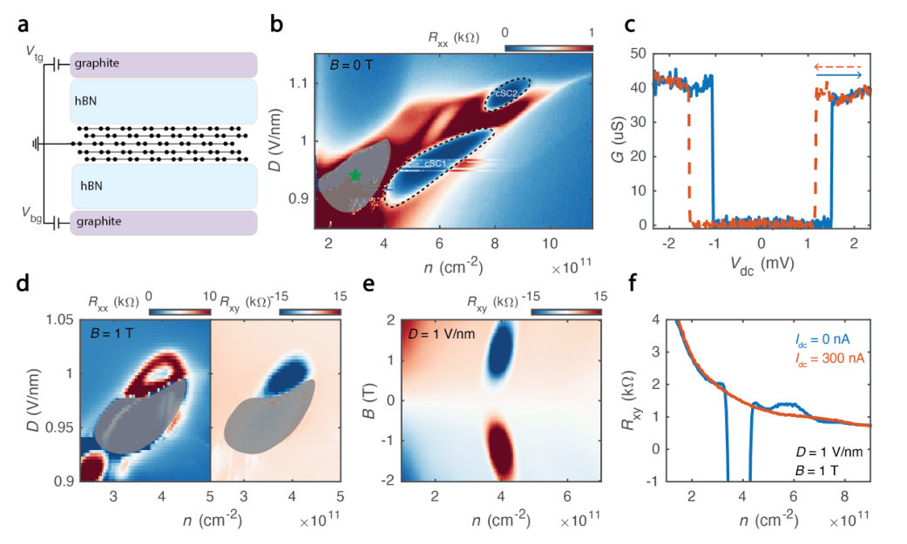
<figcaption class="paper-figure-caption"><b>Fig 1.</b> FIG. 1. Wigner and metallic Wigner crystals in R5G. a, Schematic of the dual-graphite-gated device geometry that enables independent tuning of the carrier density and the displacement field. b, n–D map of Rxx at B = 0 T (T = 20 mK). Two chiral superconducting states (cSC1 and cSC2) are visible in this region. At low carrier densities, we observe a region of extremely high resistance, highlighted by the light-gray shaded area, where current injection into the system is suppressed. c, Conductance as a function of DC bias voltage at the point marked by the green star in b. The blue and orange curves represent forward and backward sweeps, respectively. Shape switching and hysteresis are...</figcaption>
</figure>
<figure class="paper-figure-card">
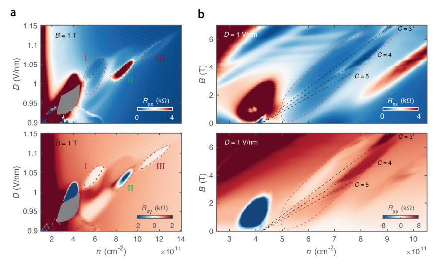
<figcaption class="paper-figure-caption"><b>Fig 2.</b> FIG. 2. Bifurcation of region I. a, n–D maps of Rxx and Rxy at B = 1 T, obtained by symmetrizing and antisymmetrizing the data measured B = ±1 T. Apart from the regions in the phase diagram that host cSC1 and cSC2, we identify three distinct regions, I, II, and III, in the remaining portions of the n–D phase space. I lies above cSC1, II lies below cSC2, and III resides at the highest electron density. We will focus on region I, enclosed by the red dashed line, which is clearly divided into two parts. The black dashed line within region I marks the boundary between these two distinct parts. b, Landau fan diagram of Rxx and Rxy at D = 1 V/nm. The red dashed line marks the boundary of region I...</figcaption>
</figure>
<figure class="paper-figure-card">
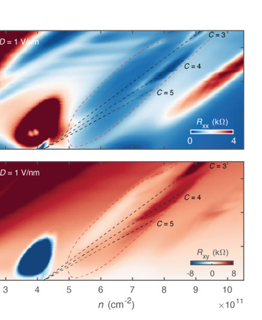
<figcaption class="paper-figure-caption"><b>Fig 3.</b> Fig. 2b shows the Landau fan diagrams of Rxx and Rxy at D = 1 V/nm. At both low and high carrier densities,</figcaption>
</figure>
<figure class="paper-figure-card">
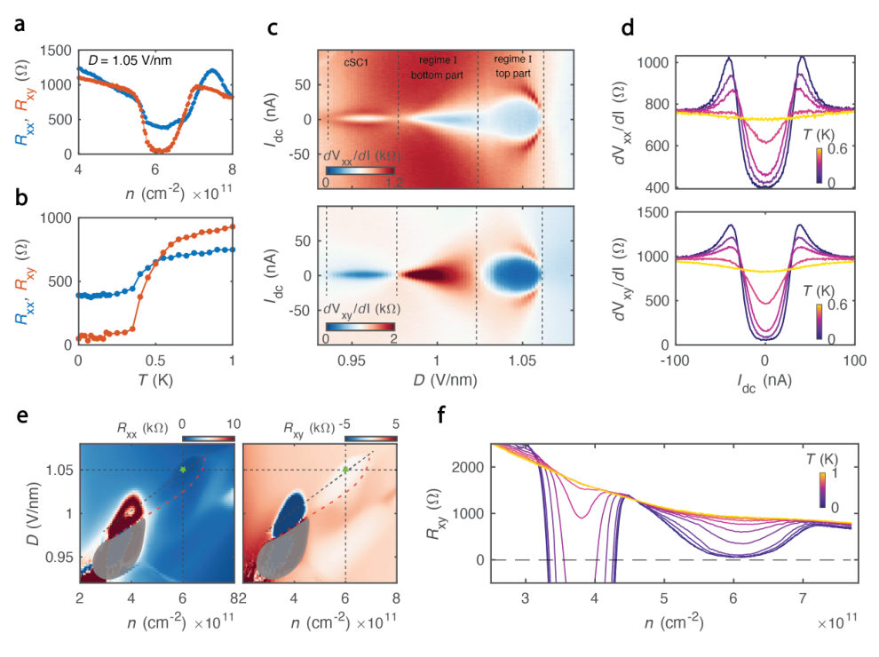
<figcaption class="paper-figure-caption"><b>Fig 4.</b> FIG. 3. Magnetic-field-stabilized superconductivity near the metallic Wigner crystal. a, Rxx (symmetrized) and Rxy (antisymmetrized) as a function of carrier density n at B = 1 T and D = 1.05 V/nm (horizontal dashed line in e). Both Rxx and Rxy show a sudden drop, with Rxy approaching zero. b, Temperature dependence of Rxx and Rxy at the optimal doping point in a, corresponding to a carrier density of n = 0.628 × 1012 cm−2. c, dVxx/dI and dVxy/dI as a function of DC bias current Idc and displacement field at a fixed carrier density of n = 0.6 × 1012 at B = 1 T(vertical dashed line in e). d, Temperature dependence of dVxx/dI (symmetrized) and dVxy/dI (antisymmetrized) at D = 1.05 V/nm and n...</figcaption>
</figure>
<figure class="paper-figure-card">
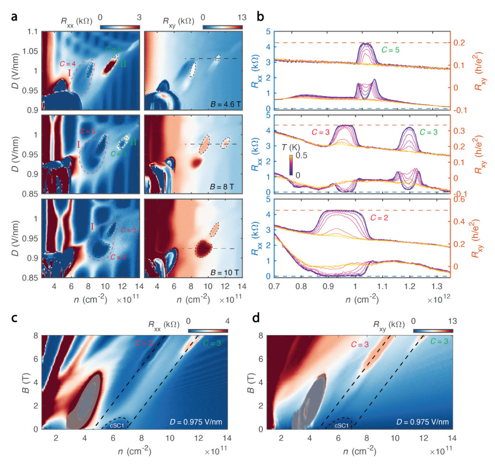
<figcaption class="paper-figure-caption"><b>Fig 5.</b> FIG. 4. Unconventional RIQH states. a, n–D maps of Rxx and Rxy at B = 4.6 T, B = 8 T and B = 10 T. The phase boundaries of regions I and II are indicated by red and green dashed lines, respectively. b, Temperature dependence of Rxx and Rxy at B = 4.6 T and D = 1.034 V/nm, B = 8 T and D = 0.975 V/nm, and B = 10 T and D = 0.925 V/nm. The black dashed lines in the right column of panel a indicate the positions of the temperature measurements at fixed displacement fields. c, d, Landau fan diagram of Rxx and Rxy at D = 0.975 V/nm. (T = 20 mK)</figcaption>
</figure>
</div>

<p><strong>Summary.</strong> This work investigates the rich phase diagram of rhombohedral graphene, demonstrating that strong electron interactions drive the system into a Wigner Crystal (WC) state at low carrier densities. Under magnetic fields, this WC phase competes with superconducting and unconventional Quantum Hall states, establishing the WC's central role in governing these emergent correlated electronic orders.</p>
<p><strong>Why it may be interesting.</strong> The study provides experimental evidence of strongly correlated insulating states (WC) coexisting with topological/superconducting phases in a tunable 2D material platform, which is highly relevant for understanding emergent quantum phenomena.</p>
<details>
<summary>Detailed structure</summary>
<p><strong>Main problem.</strong> The study aims to understand the complex, emergent electronic phases arising from strong electron-electron interactions in rhombohedral graphene.</p>
<p><strong>Main result.</strong> The highly insulating state at low carrier density is identified as a Wigner Crystal (WC) phase, which coexists and competes with superconducting (fSC) and reentrant quantum Hall (RIQH) states under magnetic fields.</p>
<p><strong>Method.</strong> Transport measurements, including $n-D$ maps of resistance ($ ext{R}<em xy>{xx},    ext{R}</em>$), differential conductance ($V-I$), and Landau fan diagrams, are used across varying magnetic fields and temperatures.</p>
<p><strong>Model / system.</strong> The physical system is rhombohedral multilayer graphene (specifically pentalayer graphene, R5G) encapsulated in hBN, allowing independent tuning of carrier density ($n$) and displacement field ($D$).</p>
<p><strong>Key observables.</strong> Longitudinal resistance ($ ext{R}<em xy>{xx}$), Hall resistance ($  ext{R}</em>$), nonlinear $V-I$ characteristics, and quantized Hall plateaus.</p>
<p><strong>Important parameters / regimes.</strong> Low carrier densities, out-of-plane magnetic fields ($B$), and the interplay between Coulomb interaction energy and kinetic energy.</p>
<p><strong>Assumptions / limitations.</strong> The analysis relies on mapping distinct phase boundaries (WC/mWC, cSC1, cSC2) observed through characteristic transport signatures like threshold behavior or sign reversals.</p>
<p><strong>Figures summary.</strong> Figures map out $n-D$ phase diagrams showing regions corresponding to WC, $  ext{fSC}$, and $    ext{RIQH}$ states; Landau fan diagrams confirm the origin of these quantized/structured states from WC boundaries.</p>
<p><strong>Paper structure.</strong> The paper systematically maps the phase diagram by varying carrier density ($n$) and displacement field ($D$), analyzing transport signatures (resistance, $V-I$ curves) at fixed magnetic fields to delineate competing orders like Wigner Crystals and superconductivity.</p>
</details>
<details>
<summary>Abstract</summary>
<p>Rhombohedral graphene systems provide a unique platform where strong electronic interactions and nontrivial band topology coexist at low carrier densities and high displacement fields, giving rise to a rich landscape of emergent electronic phases. Here, we report that the highly insulating state on the low-density side of chiral superconductivity in rhombohedral pentalayer graphene (R5G) corresponds to a Wigner crystal (WC) phase. In addition, a hole-doped metallic Wigner crystal (h-mWC) phase emerges near the WC boundary. Under an out-of-plane magnetic field, the system hosts competing magnetic-field-stabilized superconductivity (fSC) and unconventional reentrant quantum Hall (RIQH) states. These emergent phases are closely connected to the underlying WC and mWC states and evolve continuously across phase boundaries. Our results establish that WC phase plays an important role in the phase diagram of rhombohedral multilayer graphene and highlight its connection to a rich landscape of emergent phases.</p>
</details>
<p><sub><a href="#top">↑ back to top</a></sub></p>

<p><a id="paper-2607.14469"></a></p>
<h3 id="perturbation-analysis-of-maximal-quantum-leakage"><a href="http://arxiv.org/abs/2607.14469v1">Perturbation Analysis of Maximal Quantum Leakage</a></h3>
<p><strong>Authors:</strong> Zijia Zhao, Shuixin Xiao, Farhad Farokhi<br>
<strong>Type:</strong> theory · <strong>Category:</strong> quantum information and computing · <strong>PDF:</strong> <a href="https://arxiv.org/pdf/2607.14469v1">https://arxiv.org/pdf/2607.14469v1</a><br>
<strong>Analysis basis:</strong> full PDF text, analyzed in chunks
<strong>Topic relevance:</strong> <code>entanglement &amp; information structure</code> <strong>2/5</strong> · <code>Keldysh / 2PI / non-Gaussian methods</code> <strong>1/5</strong> · <code>driven-dissipative phase transition</code> <strong>1/5</strong></p>
<div class="figure-strip-hint">↔ Scroll figures horizontally</div>
<div class="paper-figures-scroll">
<figure class="paper-figure-card">
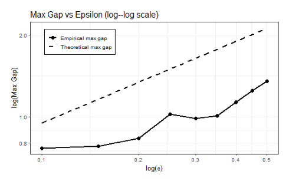
<figcaption class="paper-figure-caption"><b>Fig 1.</b> Fig. 1. Maximum deviation of 2MQL under fidelity-based perturbations as a function of the radius ε.</figcaption>
</figure>
<figure class="paper-figure-card">
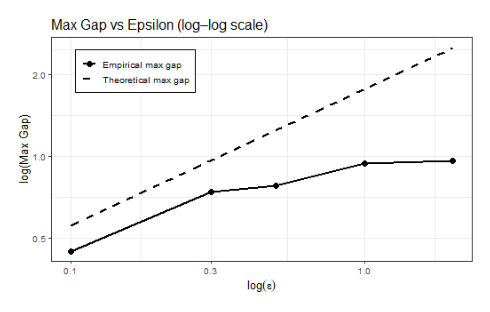
<figcaption class="paper-figure-caption"><b>Fig 2.</b> Fig. 2. Maximum deviation of 2MQL under relative-entropy-based pertur- bations as a function of the radius ε.</figcaption>
</figure>
</div>

<p><strong>Summary.</strong> This paper rigorously investigates the robustness of Maximal Quantum Leakage (MQL), a measure of worst-case information leakage, to small perturbations in the quantum encoding. The authors establish a tight continuity bound using the trace distance metric, demonstrating that MQL varies quadratically with the perturbation size. This work provides essential theoretical tools for quantifying noise resilience in quantum data processing.</p>
<p><strong>Why it may be interesting.</strong> Understanding the stability of information-theoretic quantities like MQL under physical noise or imperfect implementation is crucial for designing robust quantum communication protocols and secure quantum computation schemes.</p>
<details>
<summary>Detailed structure</summary>
<p><strong>Main problem.</strong> The paper analyzes how sensitive the Maximal Quantum Leakage (MQL) measure is to small perturbations in the quantum states used to encode classical data.</p>
<p><strong>Main result.</strong> A Lipschitz-type continuity bound for MQL with respect to the trace distance is established, showing that the leakage variation scales quadratically ($\epsilon^2$) with the perturbation size $\epsilon$ in the worst case.</p>
<p><strong>Method.</strong> The authors derive bounds by analyzing the difference between ideal and perturbed quantum states using the trace distance, fidelity, and relative entropy metrics.</p>
<p><strong>Model / system.</strong> The model involves an information leakage setting where a classical variable $X$ is encoded into an ensemble of quantum states $\{p_X(x), 
ho_x\}_{x\in X}$ on a Hilbert space $H$. Perturbations create a new ensemble $\{\dots, 
ho'_x\}_{x\in X}$.</p>
<p><strong>Key observables.</strong> Maximal Quantum Leakage ($2Q_{
ho}$), trace distance ($\|\cdot\|_1$), Fidelity ($F$), and Quantum Relative Entropy ($D$).</p>
<p><strong>Important parameters / regimes.</strong> Perturbation radius $\epsilon$, size of the random variable domain $|X|$, and Hilbert space dimension $d$.</p>
<p><strong>Assumptions / limitations.</strong> The analysis relies on establishing continuity bounds, though the derived fidelity and relative-entropy bounds are shown to be potentially loose compared to the trace distance bound.</p>
<p><strong>Figures summary.</strong> Figures 1 and 2 compare the empirical maximum deviation of $2MQL$ versus $\epsilon$ for both fidelity-based and relative-entropy-based perturbations against their respective theoretical upper bounds, showing a gap.</p>
<p><strong>Paper structure.</strong> The paper first introduces MQL and its robustness issue. It then derives the primary continuity bound using the trace distance, followed by deriving secondary bounds based on fidelity and relative entropy, concluding with numerical illustrations of these results.</p>
</details>
<details>
<summary>Abstract</summary>
<p>Maximal quantum leakage (MQL) is a worst-case information leakage measure that quantifies an adversary's inference advantage gained from accessing quantum encoding of classical data with arbitrary measurements. While MQL admits an exact characterization for a given ensemble of quantum states, its robustness to implementation imperfections has not been systematically studied. In this paper, we analyze the sensitivity of maximal quantum leakage under perturbations of the quantum encoding. We establish a continuity bound in terms of the trace distance between ideal and perturbed quantum states, and show, via an example, that this bound is attainable. We further derive fidelity-based and relative-entropy-based sufficient conditions for bounding the variation of maximal quantum leakage, and illustrate numerically that these conditions can be loose.</p>
</details>
<p><sub><a href="#top">↑ back to top</a></sub></p>

<p><a id="paper-2607.14875"></a></p>
<h3 id="optimization-dynamics-of-transformer-backflow-neural-quantum-states-for-the-two-dimensional-hubbard-model"><a href="http://arxiv.org/abs/2607.14875v1">Optimization dynamics of Transformer backflow neural quantum states for the two-dimensional Hubbard model</a></h3>
<p><strong>Authors:</strong> Zong-Yu Liao, Jia-Qi Wang, Rong-Qiang He, Zhong-Yi Lu<br>
<strong>Type:</strong> theory · <strong>Category:</strong> strongly correlated electrons · <strong>PDF:</strong> <a href="https://arxiv.org/pdf/2607.14875v1">https://arxiv.org/pdf/2607.14875v1</a><br>
<strong>Analysis basis:</strong> full PDF text, analyzed in chunks
<strong>Topic relevance:</strong> <code>analog quantum simulation</code> <strong>2/5</strong> · <code>methods for driven-dissipative</code> <strong>1/5</strong></p>
<div class="figure-strip-hint">↔ Scroll figures horizontally</div>
<div class="paper-figures-scroll">
<figure class="paper-figure-card">
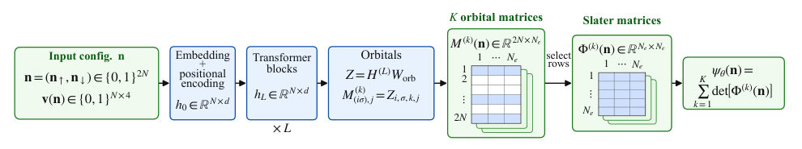
<figcaption class="paper-figure-caption"><b>Fig 1.</b> FIG. 1. Schematic architecture of the main-training Transformer backflow NQS. The input configuration is mapped to local one-hot tokens and processed by an embedding layer with positional encoding, followed by L Transformer blocks. The orbital head produces K configuration- dependent orbital matrices M(k)(n) ∈R2N×Ne. For each determinant channel, the occupied spin-orbital rows specified by I(n) are selected to form the Slater matrix Φ(k)(n) ∈RNe×Ne, and the final wave-function amplitude is obtained by summing the determinants over k.</figcaption>
</figure>
<figure class="paper-figure-card">
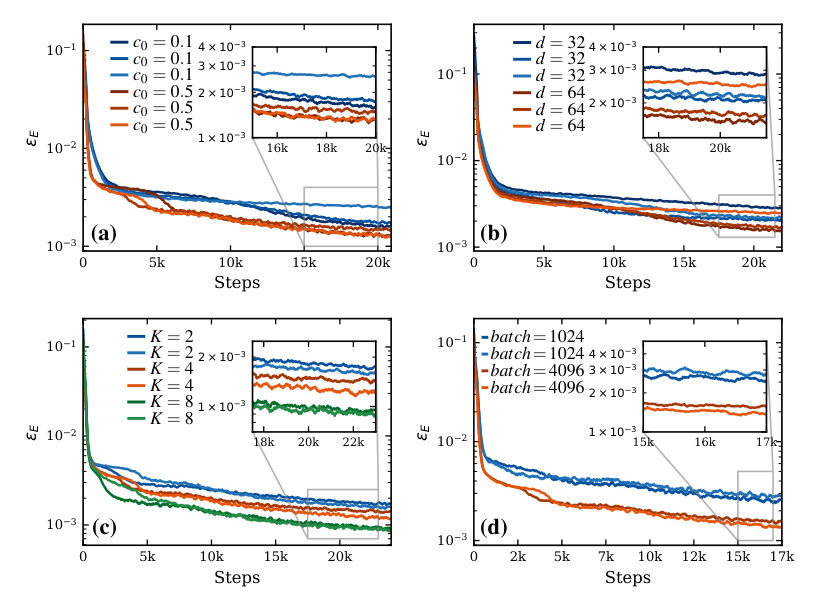
<figcaption class="paper-figure-caption"><b>Fig 2.</b> FIG. 2. Baseline ablation results for the doped 4 × 4 PBC Hubbard model at U = 8 and Ne = 14. The four panels compare (a) the initial update-norm threshold c0, (b) the Transformer hidden dimension d, (c) the number of determinant channels K, and (d) the Monte Carlo batch size B. In each panel, only the indicated parameter is varied, while the remaining main-training settings are fixed for that comparison. In panel (a), the less restrictive choice c0 = 0.5 reaches the 10−3 error level more efficiently, whereas c0 = 0.1 remains at errors of a few 10−3. In panel (b), increasing the width from d = 32 to d = 64 lowers the late-time error from the several-10−3 range toward the 10−3 level. In...</figcaption>
</figure>
<figure class="paper-figure-card">
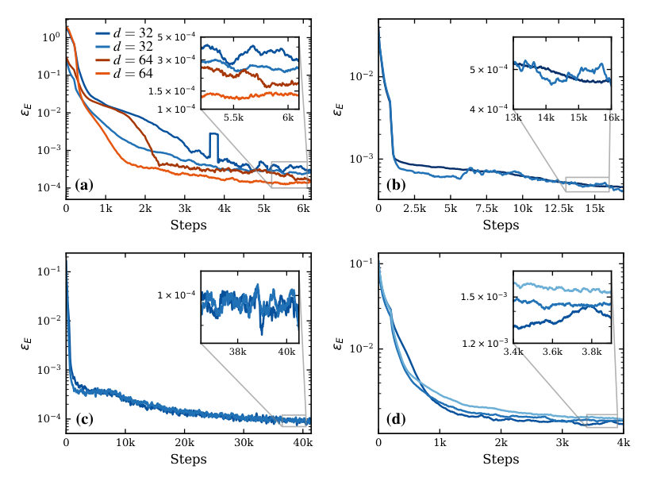
<figcaption class="paper-figure-caption"><b>Fig 3.</b> FIG. 3. Optimization behavior across different 4×4 Hubbard-model settings. The panels show (a) the half-filled PBC system at U = 8, (b) the doped PBC system at weaker interaction U = 4, (c) the half-filled OBC system at U = 8, and (d) the doped OBC system at U = 8. Panel (a) compares d = 32 and d = 64 with K = 4, B = 4096, and c0 = 0.1, making it directly comparable to the width ablation of the strongly correlated doped U = 8 baseline in Fig. 2(b). The half-filled PBC system in panel (a) reaches the 10−4 error level, whereas the corresponding doped U = 8 baseline in Fig. 2(b) remains mainly at the 10−3 level. Panel (b) uses the same main Transformer/MARCH settings as the c0 = 0.5 baseline...</figcaption>
</figure>
<figure class="paper-figure-card">
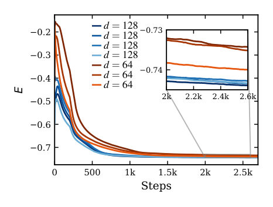
<figcaption class="paper-figure-caption"><b>Fig 4.</b> FIG. 4. Optimization on the larger doped 8 × 8 PBC Hubbard lat- tice at U = 8 and Ne = 56. Because a strict reference energy is not used for this larger system in the present comparison, we plot the variational energy per site, denoted by E in this figure. The calcula- tion uses K = 4, B = 1024, and c0 = 0.5, and compares Transformer widths d = 64 and d = 128. Both widths lead to stable optimiza- tion on the larger lattice, with the energy per site decreasing to the E ≃−0.73–−0.74 range. The wider Transformer reaches a lower late-time energy, with a visible separation from the d = 64 curves on the 10−3–10−2 energy-per-site scale, indicating that increased model capacity remains beneficial...</figcaption>
</figure>
</div>

<p><strong>Summary.</strong> This paper develops and analyzes a sophisticated, multi-stage training protocol using Transformer backflow Neural Quantum States (NQS) to simulate the 2D Hubbard model. It systematically investigates how hyperparameters—such as network width and update constraints—affect the convergence and accuracy of the variational energy calculation. The findings establish practical best practices for applying deep learning models to challenging strongly correlated quantum systems.</p>
<p><strong>Why it may be interesting.</strong> This work directly advances the computational tools used to tackle strongly correlated electron systems by providing rigorous guidelines for optimizing advanced machine learning representations (Transformers) in quantum many-body physics.</p>
<details>
<summary>Detailed structure</summary>
<p><strong>Main problem.</strong> The study investigates how the optimization dynamics of Transformer backflow Neural Quantum States (NQS) perform when applied to calculate ground states for the two-dimensional Hubbard model.</p>
<p><strong>Main result.</strong> The research identifies practical optimization trends, showing that a balance between ansatz expressivity (Transformer width/channels), update stability (update constraint), and sampling quality (MC batch size) is crucial for convergence.</p>
<p><strong>Method.</strong> A multi-stage training workflow involving NNB initialization, supervised Transformer pre-training, and main energy minimization using the Moment-Adaptive ReConfiguration Heuristic (MARCH) within Variational Monte Carlo (VMC).</p>
<p><strong>Model / system.</strong> The primary system is the two-dimensional Hubbard model on a square lattice. The Hamiltonian includes hopping terms ($t, t'$) and an on-site repulsion term ($U$). Studies cover doped and half-filled regimes, using both Periodic and Open Boundary Conditions.</p>
<p><strong>Key observables.</strong> Variational energy per site ($ ext{E}$), convergence behavior of the VMC optimization, and local energy $E_{loc}(n)$.</p>
<p><strong>Important parameters / regimes.</strong> Update-norm threshold ($c_0$), Transformer width ($d$), number of determinant channels ($K$), Monte Carlo batch size ($B$), interaction strength ($U$), and doping level.</p>
<p><strong>Assumptions / limitations.</strong> The use of a multi-stage training protocol (NNB $
ightarrow$ Pre-training $
ightarrow$ MARCH) is necessary to stabilize the optimization of the highly expressive Transformer architecture.</p>
<p><strong>Figures summary.</strong> Figures illustrate the optimization behavior across various Hubbard model settings (half-filled vs. doped, PBC vs. OBC) and show how increasing Transformer width leads to lower late-time variational energies on larger lattices.</p>
<p><strong>Paper structure.</strong> The paper details a multi-stage training protocol: 1) NNB initialization for lightweight orbital generation; 2) Supervised pre-training of the full Transformer architecture using NNB outputs as targets; and 3) Main energy optimization via MARCH within VMC, analyzing parameter dependencies at each stage.</p>
</details>
<details>
<summary>Abstract</summary>
<p>Building on the multi-determinant Transformer backflow neural quantum state (NQS) ansatz and the associated multi-stage training workflow for the doped two-dimensional Hubbard model, we investigate how the optimization dynamics of the NQS depend on several key optimization and architectural hyperparameters. The workflow consists of neural-network backflow (NNB) initialization, supervised Transformer pre-training, and main energy optimization using the Moment-Adaptive ReConfiguration Heuristic (MARCH) within variational Monte Carlo. Using the doped $4\times4$ periodic Hubbard model at $U=8$ as a baseline, we examine how the update-norm threshold, Transformer width, number of determinant channels, and Monte Carlo batch size affect convergence. We find that a moderate update constraint improves the efficiency of MARCH optimization, larger Transformer width and more determinant channels improve the expressive capacity of the ansatz, and larger Monte Carlo batches reduce sampling noise in the update direction. We further test the same workflow at half filling, weaker interaction strength, open boundary conditions, and on a larger $8\times8$ doped lattice. These results identify practical optimization trends for Transformer backflow NQSs and highlight the balance between ansatz expressivity, MARCH update stability, and Monte Carlo sampling quality.</p>
</details>
<p><sub><a href="#top">↑ back to top</a></sub></p>

<p><a id="paper-2607.15044"></a></p>
<h3 id="towards-logical-entanglement-creation-in-trivalent-planar-architectures"><a href="http://arxiv.org/abs/2607.15044v1">Towards logical entanglement creation in trivalent planar architectures</a></h3>
<p><strong>Authors:</strong> Lukas Bödeker, Luis Colmenarez, Sergey Blinov, Ants Remm, Simon Gustavsson, Markus Müller<br>
<strong>Type:</strong> theory · <strong>Category:</strong> quantum information and computing · <strong>PDF:</strong> <a href="https://arxiv.org/pdf/2607.15044v1">https://arxiv.org/pdf/2607.15044v1</a><br>
<strong>Analysis basis:</strong> full PDF text, analyzed in chunks
<strong>Topic relevance:</strong> <code>QC/QI experiment</code> <strong>2/5</strong> · <code>quantum measurements</code> <strong>1/5</strong></p>
<div class="figure-strip-hint">↔ Scroll figures horizontally</div>
<div class="paper-figures-scroll">
<figure class="paper-figure-card">
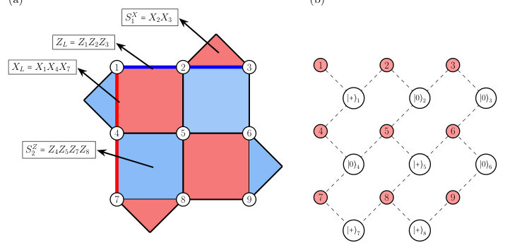
<figcaption class="paper-figure-caption"><b>Fig 1.</b> Figure 1. Illustrations of a distance d = 3 rotated surface code or surface-17 patch. In (a) the definition of the code in terms of its stabilizer generators and logical operators is indicated. Generally, red stands for X-type operators and blue stands for Z-type operators. The support of the stabilizer generators corresponds to corner qubits of the colored plaquette, while the logical operators have support on the colored lines. In (b) the qubit layout for the trivalent surface code is given with the same data-qubit numbering. A valid initialization state of the ancilla qubits is indicated.</figcaption>
</figure>
<figure class="paper-figure-card">
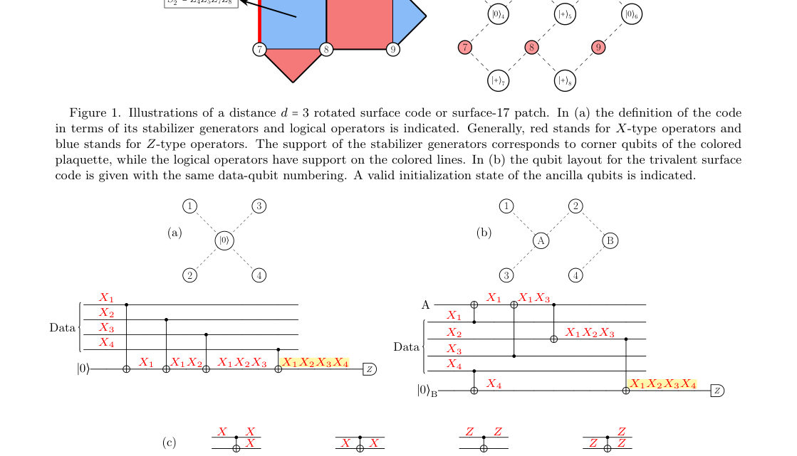
<figcaption class="paper-figure-caption"><b>Fig 2.</b> Figure 2. Comparison of the measurement circuits of single weight-four Z plaquette stabilizer parity between the four-valent measurement scheme (a) and the trivalent measurement scheme (b). The respective qubit layouts, including their valencies (upper row) and the circuitry are shown (lower row). In the two measurement circuits, the propagation of potential single X errors incident on the data qubits is tracked to show explicitly how the respective error is recorded by measuring the ancilla. The notation of Xi being present shall be understood as a potential error on each of the data qubits. The ancilla initialization and measurement for the trivalent measurement scheme is adapted compared...</figcaption>
</figure>
<figure class="paper-figure-card">
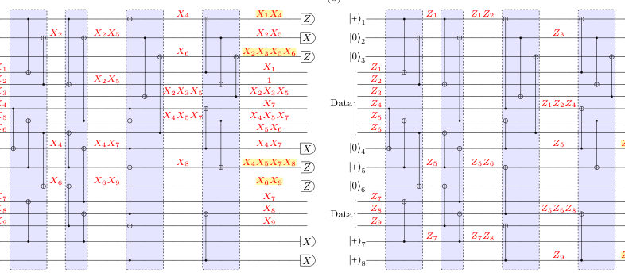
<figcaption class="paper-figure-caption"><b>Fig 3.</b> Figure 3. Circuitry for conducting a single QEC cycle for the trivalent measurement scheme. The next readout cycle would correspond to the execution of an altered circuit and is given in Fig. 4. The panels (a) and (b) show the same circuit, but demonstrate the measurement of Z-type stabilizers and X-type stabilizers by showing the propagation of X and Z-type data-qubit errors. After initializing the ancilla qubits, entangling gates are conducted in four time steps. Finally, the ancilla qubits are measured in the appropriate basis to obtain the stabilizer value. The X and Z stabilizers are measured in an intertwined manner, but still maintaining the same gate count as in the four-valent...</figcaption>
</figure>
<figure class="paper-figure-card">
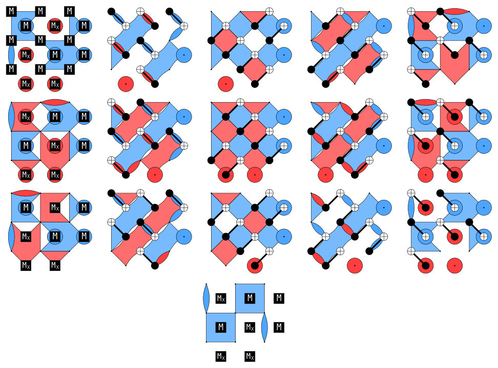
<figcaption class="paper-figure-caption"><b>Fig 4.</b> Figure 4. Circuitry for initializing the ∣0⟩L state of the d = 3 rotated surface code fault tolerantly by conducting three rounds of stabilizer measurements using the trivalent circuit design. To be read from left to right and then top to bottom.</figcaption>
</figure>
<figure class="paper-figure-card">
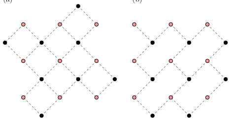
<figcaption class="paper-figure-caption"><b>Fig 5.</b> Figure 6. Comparison of the qubit layout and connec- tivity for the distance-d = 3 surface code in the four-valent (a) and trivalent (b) readout schemes. For distance d, the trivalent layout has (d −1)2 physical couplings less com- pared to the four-valent layout. Data qubits are indicated in red, while ancilla qubits are black. The dashed lines in- dicate the qubit connectivity that is used to execute the respective scheme.</figcaption>
</figure>
</div>

<p><strong>Summary.</strong> This paper proposes and analyzes the use of trivalent lattice surgery as an efficient alternative to conventional four-valent methods for implementing surface code QEC. By reducing resource overheads in planar architectures, it paves a scalable path toward realizing logical quantum processors using hardware with limited qubit connectivity.</p>
<p><strong>Why it may be interesting.</strong> This work directly addresses hardware constraints (connectivity) in realizing fault-tolerant quantum computation, which is a major bottleneck for building large-scale quantum processors based on superconducting circuits or similar planar platforms.</p>
<details>
<summary>Detailed structure</summary>
<p><strong>Main problem.</strong> The core problem is developing low-overhead quantum error-correction (QEC) schemes for planar architectures with limited qubit connectivity.</p>
<p><strong>Main result.</strong> A trivalent lattice-surgery protocol significantly reduces required resources compared to standard four-valent methods, potentially improving logical fidelity by up to 25% in near-term superconducting implementations.</p>
<p><strong>Method.</strong> The authors compare the resource scaling and logical performance of two stabilizer measurement schemes—trivalent versus four-valent—within the framework of lattice surgery for surface codes.</p>
<p><strong>Model / system.</strong> The study focuses on implementing the surface code, particularly using a rotated geometry suitable for planar qubit layouts like those realized with fluxonium qubits. The comparison is between circuits requiring 3-neighbor (trivalent) versus 4-neighbor (four-valent) interactions for stabilizer measurements.</p>
<p><strong>Key observables.</strong> Logical fidelity ($\approx 25\%$ improvement potential), required physical resources ($O(d)$ reduction in qubits/gates), and the logical error rate ($\epsilon_L$) under various noise models.</p>
<p><strong>Important parameters / regimes.</strong> Code distance ($d=3$ benchmarked), qubit connectivity (trivalent vs. four-valent), and noise parameters including gate errors ($p$), measurement errors ($q$), and idling noise ($I$).</p>
<p><strong>Assumptions / limitations.</strong> The analysis assumes the ability to embed plaquettes correctly for fault tolerance, and later sections compare performance using leading-order quadratic expansions of $\epsilon_L$ based on specific noise sources.</p>
<p><strong>Figures summary.</strong> Figures illustrate distance $d=3$ surface code patches, comparing measurement circuits (four-valent vs. trivalent), and showing comparisons of logical error rates ($p_L$) under different noise assumptions.</p>
<p><strong>Paper structure.</strong> The paper progresses by establishing the need for low-overhead QEC on planar lattices, detailing the structural advantages of trivalent lattice surgery over four-valent methods in terms of resource scaling, and concluding with quantitative benchmarking of logical fidelity using realistic noise models.</p>
</details>
<details>
<summary>Abstract</summary>
<p>Low-overhead quantum error-correction schemes are essential for enabling quantum computation on registers containing multiple logical qubits. For planar architectures with limited nearest-neighbor qubit connectivity, the surface code has emerged as the leading paradigm. Recent theoretical and experimental work has shown that a physical-qubit connectivity of degree three is sufficient to implement fault-tolerant quantum error correction. In this work, we study lattice surgery in the context of such trivalent architectures and introduce scalable circuit constructions to implement it. Compared with the four-valent measurement scheme, the trivalent lattice-surgery protocol reduces the required resources by $\mathcal{O}(d)$ qubits out of a total qubit count of $\mathcal{O}(d^2)$ and by $\mathcal{O}(d)$ two-qubit gates out of a total two-qubit gate count of $\mathcal{O}(d^3)$. We benchmark the logical fidelity of both lattice-surgery schemes in terms of experimentally realistic simulations targeting an implementation with a fluxonium qubit based architecture and find a potential improvement of up to $\approx25\%$ for distance-three. These results open a way for scalable planar trivalent qubit architectures to host a surface-code-based logical quantum processor.</p>
</details>
<p><sub><a href="#top">↑ back to top</a></sub></p>

<p><a id="paper-2607.14569"></a></p>
<h3 id="no-finite-npa-level-characterizes-the-complete-quantum-set-in-the-simplest-bell-scenario"><a href="http://arxiv.org/abs/2607.14569v1">No Finite NPA Level Characterizes the Complete Quantum Set in the Simplest Bell Scenario</a></h3>
<p><strong>Authors:</strong> Anubhav Chaturvedi<br>
<strong>Type:</strong> theory · <strong>Category:</strong> quantum information and computing · <strong>PDF:</strong> <a href="https://arxiv.org/pdf/2607.14569v1">https://arxiv.org/pdf/2607.14569v1</a><br>
<strong>Analysis basis:</strong> full PDF text, analyzed in chunks
<strong>Topic relevance:</strong> <code>entanglement &amp; information structure</code> <strong>2/5</strong></p>
<div class="figure-strip-hint">↔ Scroll figures horizontally</div>
<div class="paper-figures-scroll">
<figure class="paper-figure-card">
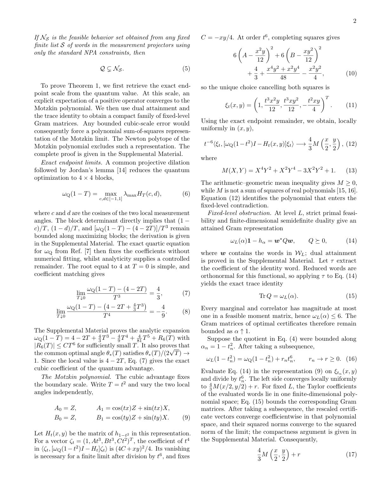
<figcaption class="paper-figure-caption"><b>Fig 1.</b> Low-resolution page preview, page 2</figcaption>
</figure>
<figure class="paper-figure-card">
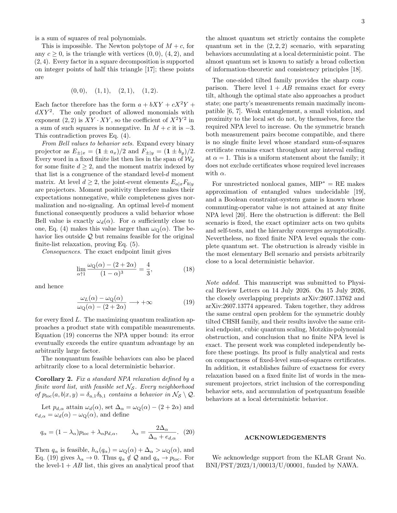
<figcaption class="paper-figure-caption"><b>Fig 2.</b> Low-resolution page preview, page 3</figcaption>
</figure>
<figure class="paper-figure-card">
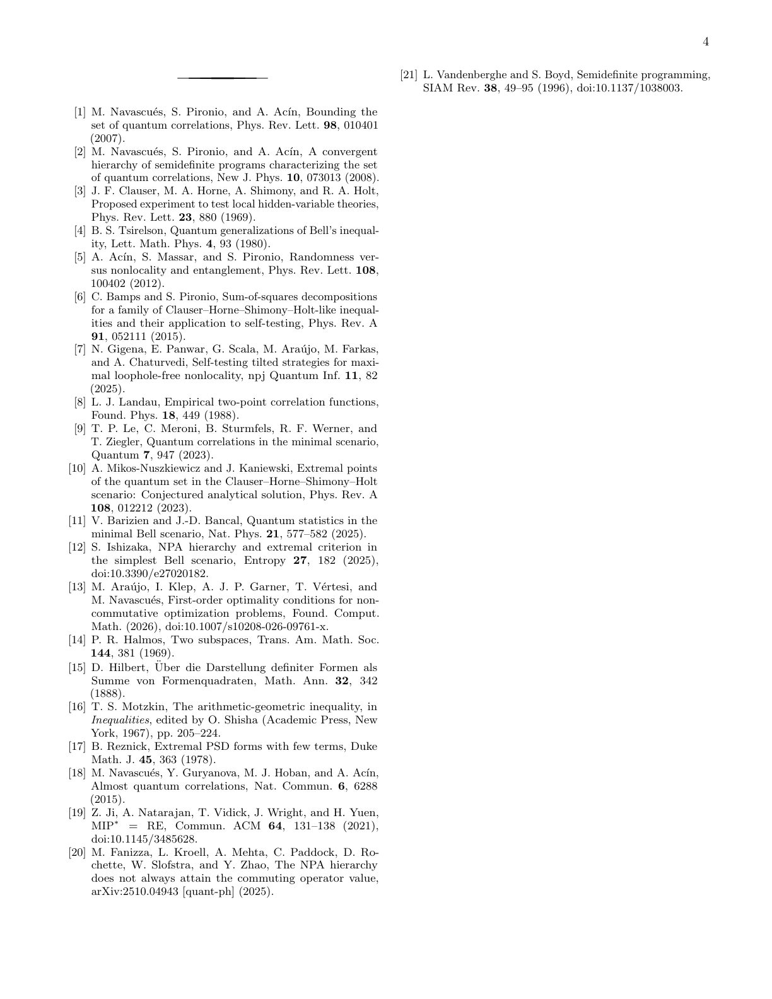
<figcaption class="paper-figure-caption"><b>Fig 3.</b> Low-resolution page preview, page 4</figcaption>
</figure>
<figure class="paper-figure-card">
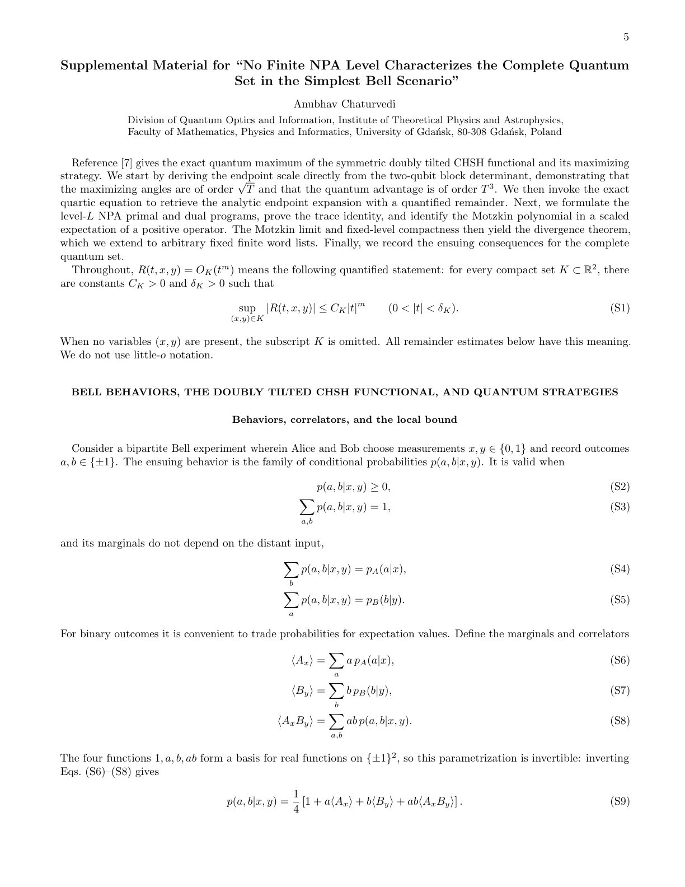
<figcaption class="paper-figure-caption"><b>Fig 4.</b> Low-resolution page preview, page 5</figcaption>
</figure>
<figure class="paper-figure-card">
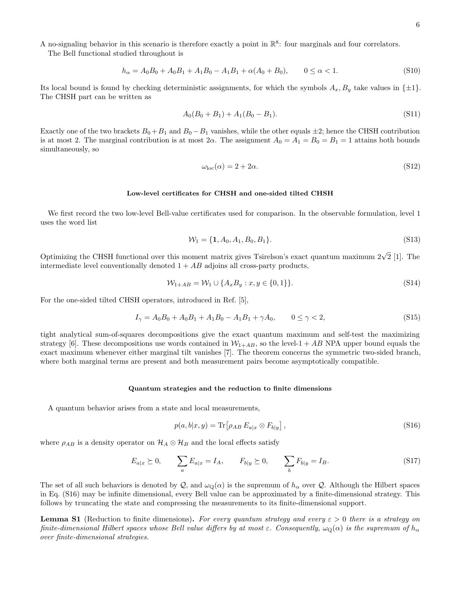
<figcaption class="paper-figure-caption"><b>Fig 5.</b> Low-resolution page preview, page 6</figcaption>
</figure>
</div>

<p><strong>Summary.</strong> The paper rigorously proves that the standard NPA hierarchy fails to provide an exact characterization of quantum correlations in simple Bell tests. By analyzing asymptotic limits and using polynomial sum-of-squares techniques, the authors show a persistent gap between the best finite approximation and the true quantum maximum. This establishes a fundamental limitation on the power of fixed-level semidefinite programming relaxations for certifying quantum nonlocality.</p>
<p><strong>Why it may be interesting.</strong> This work provides fundamental theoretical limits on how well classical or semi-classical relaxation techniques (like those used in semidefinite programming) can capture true quantum correlations, which is crucial for understanding resource theories.</p>
<details>
<summary>Detailed structure</summary>
<p><strong>Main problem.</strong> The core problem is determining if any finite level of the Navascués–Pironio–Acín (NPA) hierarchy can exactly characterize the complete quantum set in the simplest bipartite Bell scenario.</p>
<p><strong>Main result.</strong> The authors prove that no fixed, finite NPA relaxation level can perfectly describe the true quantum correlations, demonstrating a strict inclusion $\mathcal{Q} \subsetneq 	ext{NS}$.</p>
<p><strong>Method.</strong> The proof uses asymptotic analysis by comparing the quantum maximum value ($\omega_Q$) with the bound derived from fixed-level moment constraints ($\omega_L$), showing their difference diverges.</p>
<p><strong>Model / system.</strong> The system is a bipartite Bell experiment involving two binary measurements per party. The analysis focuses on the doubly tilted CHSH functional, $h_\alpha$, which quantifies correlations between measurement outcomes.</p>
<p><strong>Key observables.</strong> Quantum maximum value ($\omega_Q(\alpha)$), fixed-level NPA bound ($\omega_L(\alpha)$), and the Motzkin polynomial ($M(X, Y)$).</p>
<p><strong>Important parameters / regimes.</strong> The tilt parameter $\alpha$ (or $T=1-\alpha$), which is taken to approach 1 in the asymptotic analysis.</p>
<p><strong>Assumptions / limitations.</strong> The analysis assumes standard NPA constraints based on moment positivity and linear identities; it specifically excludes state- or operator-optimality conditions.</p>
<p><strong>Paper structure.</strong> The paper establishes the problem using the CHSH functional, develops the asymptotic comparison between $\omega_Q$ and $\omega_L$, uses polynomial sum-of-squares arguments involving the Motzkin polynomial to show a contradiction, and concludes with the strict inequality $\mathcal{Q} \subsetneq 	ext{NS}$.</p>
</details>
<details>
<summary>Abstract</summary>
<p>The Navascués--Pironio--Acín (NPA) hierarchy gives the standard semidefinite outer approximations to quantum behaviors. Whether \emph{any} finite level can already equal the quantum set has remained open even in the bipartite scenario with two binary measurements per party. We demonstrate that \emph{no finite level} is exact. For the symmetric doubly tilted CHSH functional $h_α=A_0B_0+A_0B_1+A_1B_0-A_1B_1+α(A_0+B_0)$, set $T=1-α$. Its quantum maximum satisfies $[ω_{\rm Q}(1-T)-(4-2T)]/T^3\to4/3$, whereas every fixed NPA level satisfies $[ω_L(1-T)-ω_{\rm Q}(1-T)]/T^3\to+\infty$. Under the corresponding boundary rescaling, an explicit expectation of the positive operator $ω_{\rm Q}(1-t^2)I-H_t$ converges to the Motzkin polynomial. A bounded fixed-level error would therefore make the Motzkin polynomial plus a nonnegative constant a sum of squares, which is impossible. Consequently, every standard NPA relaxation based on a fixed finite list of words in the measurement projectors strictly contains the complete quantum set, and its nonquantum behaviors accumulate at a local deterministic behavior. Thus, the finite-level exactness of CHSH and all one-sided tilted CHSH maxima does not extend to an exact finite-level description of the complete quantum set in the minimal scenario.</p>
</details>
<p><sub><a href="#top">↑ back to top</a></sub></p>

<p><a id="paper-2607.14799"></a></p>
<h3 id="the-distribution-of-eccentricities-in-random-regular-graphs"><a href="http://arxiv.org/abs/2607.14799v1">The distribution of eccentricities in random regular graphs</a></h3>
<p><strong>Authors:</strong> Dor Lev-Ari, Ofer Biham, Eytan Katzav<br>
<strong>Type:</strong> theory · <strong>Category:</strong> statistical mechanics · <strong>PDF:</strong> <a href="https://arxiv.org/pdf/2607.14799v1">https://arxiv.org/pdf/2607.14799v1</a><br>
<strong>Analysis basis:</strong> full PDF text, analyzed in chunks
<strong>Topic relevance:</strong> <code>Keldysh / 2PI / non-Gaussian methods</code> <strong>1/5</strong> · <code>analog quantum simulation</code> <strong>1/5</strong> · <code>correlated / nonlocal dissipation</code> <strong>1/5</strong> · <code>driven-dissipative phase transition</code> <strong>1/5</strong> · <code>entanglement &amp; information structure</code> <strong>1/5</strong> · <code>methods for driven-dissipative</code> <strong>1/5</strong> · <code>non-equilibrium dynamics</code> <strong>1/5</strong> · <code>non-equilibrium universality</code> <strong>1/5</strong></p>
<div class="figure-strip-hint">↔ Scroll figures horizontally</div>
<div class="paper-figures-scroll">
<figure class="paper-figure-card">
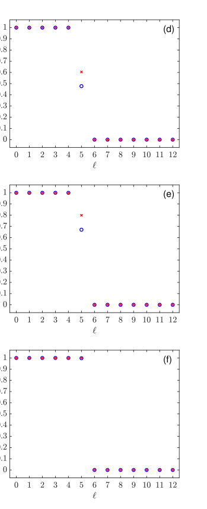
<figcaption class="paper-figure-caption"><b>Fig 1.</b> Figure 1. Analytical results (×) for the distribution of eccentricities P(E &gt; ℓ) of nodes in RRGs that consist of nodes of degree c = 5 and network sizes of (a) N = 160; (b) N = 242; (c) N = 272; (d) N = 296; (e) N = 322 and (f) N = 440. The analytical results, obtained from Eq. (14), are in reasonable agreement with the results obtained from computer simulations (◦), where the deviations are due to finite-size effects. The simulation results were averaged over 20 network instances. For N = 160 the eccentricity of essentially all the nodes is E = 5. As N is increased, nodes of eccentricity E = 6 emerge and their weight increases until at N = 440 essentially all the nodes are of eccentricity E...</figcaption>
</figure>
<figure class="paper-figure-card">

<figcaption class="paper-figure-caption"><b>Fig 2.</b> Figure 2. Analytical results (×) for the distribution of eccentricities P(E &gt; ℓ) of nodes in RRGs that consist of nodes of degree c = 5 and network sizes of (a) N = 7, 500; (b) N = 10, 000; (c) N = 11, 000; (d) N = 12, 000; (e) N = 13, 000 and (f) N = 20, 000. The analytical results, obtained from Eq. (14), are in very good agreement with the results obtained from computer simulations (◦). The simulation results were averaged over 20 network instances. For N = 7, 500 the eccentricity of essentially all the nodes is E = 8. As N is increased, nodes of eccentricity E = 9 emerge and their weight increases until at N = 20, 000 essentially all the nodes are of eccentricity E = 9.</figcaption>
</figure>
<figure class="paper-figure-card">

<figcaption class="paper-figure-caption"><b>Fig 3.</b> Figure 3. Analytical results (×) for the distribution of eccentricities P(E &gt; ℓ) of nodes in RRGs that consist of nodes of degree c = 5 and network sizes of (a) N = 22, 000; (b) N = 36, 000; (c) N = 39, 000; (d) N = 41, 000; (e) N = 43, 000 and (f) N = 55, 000. The analytical results, obtained from Eq. (14), are in excellent agreement with the results obtained from computer simulations (◦). The simulation results were averaged over 20 network instances. For N = 22, 000 the eccentricity of essentially all the nodes is E = 9. As N is increased, nodes of eccentricity E = 10 emerge and their weight increases until at N = 55, 000 essentially all the nodes are of eccentricity E = 10.</figcaption>
</figure>
<figure class="paper-figure-card">

<figcaption class="paper-figure-caption"><b>Fig 4.</b> Figure 4. Analytical results (×) for the probability (a) P(E &gt; 5); (b) P(E &gt; 8) and (c) P(E &gt; 9), as a function of the network size N for RRGs consisting of nodes of degree c = 5, obtained from Eq. (14). The analytical results are found to be systematically larger than the corresponding simulation results (◦). For each value of ℓ, the probability P(E &gt; ℓ) is shown for the window of network sizes in which it changes from zero to one. The discrepancy between the theory and simulation results decreases as the network size is increased.</figcaption>
</figure>
<figure class="paper-figure-card">

<figcaption class="paper-figure-caption"><b>Fig 5.</b> Figure 5. Analytical results (×) and simulation results (◦) for the mean eccentricity ⟨E⟩in RRGs that consist of nodes of degree c = 5, as a function of the network size N. While the simulation results tend to lock in to integer values, the analytical results, obtained from Eq. (38), follow a smoothed-out contour. We also present approximate results (+), obtained from Eq. (40). These results, which are based on an approximate form of the tail-sum formula, are in very good agreement with the simulation results. However, the analytical expression given by Eq. (38) elucidates the scaling of ⟨E⟩as a function of N and c in a more transparent way.</figcaption>
</figure>
</div>

<p><strong>Summary.</strong> This paper provides rigorous analytical results for the distribution of eccentricities in Random Regular Graphs. By deriving closed-form expressions for key statistical measures like the mean and variance, it offers a detailed understanding of network structure based on graph theory principles. The methods developed using extreme value statistics are valuable benchmarks for analyzing global properties in large complex systems.</p>
<p><strong>Why it may be interesting.</strong> While focused on graph theory, the mathematical techniques used—analyzing extreme value statistics (eccentricity) in large complex systems—are highly relevant to characterizing rare events or global properties in quantum many-body systems or disordered lattices.</p>
<details>
<summary>Detailed structure</summary>
<p><strong>Main problem.</strong> The primary goal is deriving a closed-form analytical expression for the distribution of eccentricities (DoE) in random regular graphs (RRGs). This provides a detailed view of the large-scale structure beyond just characteristic length scales.</p>
<p><strong>Main result.</strong> A closed-form tail distribution $P(E > \ell)$ is derived, along with asymptotic expressions for the mean eccentricity $\langle E 
angle$ and variance $ ext{Var}(E)$. The mode is found to be close to the rounded value of the mean eccentricity.</p>
<p><strong>Method.</strong> The analysis employs Extreme Value Theory (EVT) and utilizes tail-sum formulas combined with approximations like the Euler-Maclaurin formula to analyze moments ($\langle E 
angle, \langle E^2 
angle$).</p>
<p><strong>Model / system.</strong> The model is a Random Regular Graph (RRG) consisting of $N$ nodes, where every node has a fixed degree $c$. Eccentricity quantifies the maximum shortest path distance from any node to all others.</p>
<p><strong>Key observables.</strong> Distribution of eccentricities ($P(E > \ell)$), Mean eccentricity ($\langle E 
angle$), Mode of DoE ($E_{	ext{mode}}$), and Variance ($  ext{Var}(E)$).</p>
<p><strong>Important parameters / regimes.</strong> Number of nodes $N$, constant degree $c$ (with $c \ge 3$). The analysis is focused on the large $N$ limit.</p>
<p><strong>Assumptions / limitations.</strong> The derivations rely on approximations derived from the tail distribution of shortest path lengths and assume that correlations between distances can be managed or neglected in the asymptotic limit.</p>
<p><strong>Figures summary.</strong> Figures compare analytical predictions ($  imes$, $+$) against simulation results ($\circ$) for the mode ($E_{	ext{mode}}$) and variance ($ ext{Var}(E)$) as a function of network size $N$ for fixed degree $c=5$.</p>
<p><strong>Paper structure.</strong> The paper progresses by first establishing the tail distribution using EVT, then deriving closed-form expressions for higher moments like $\langle E^2 
angle$, and finally analyzing the resulting variance and mode behavior as functions of network size.</p>
</details>
<details>
<summary>Abstract</summary>
<p>We derive a closed-form analytical expression for the distribution of eccentricities (DoE) in random regular graphs (RRGs) that consist of $N$ nodes of degree $c$. The DoE is given by the tail distribution $P(E > \ell) \simeq 1 - \exp \left[ - \exp \left( - \frac{ e^{b \ell} - μ}β \right) \right]$, where the distance $\ell$ takes integer values, $b = \ln (c-1)$ is the shape parameter, $β= \frac{c-2}{c} N$ is the scale parameter and $μ= \frac{c-2}{c} N \ln N$ is the location parameter. By providing the full distribution rather than a single characteristic length scale, we present a detailed view of the large-scale structure. In spite of the fact that the degrees of all the nodes are the same, their eccentricities exhibit non-trivial variations. We derive a closed-form expression for the mean eccentricity, which is given by $\langle E \rangle \simeq \frac{\ln N}{\ln (c-1)} + \frac{\ln \ln N}{\ln (c-1)} - \frac{ \ln c - \ln (c-2) }{ \ln (c-1) } + \frac{1}{2}$. We calculate the mode of the DoE, which exhibits a staircase profile as a function of the network size. Interestingly, the mode is given by $E_{\rm mode} ={\rm Round} \left( \langle E \rangle \right)$, where ${\rm Round}( x )$ is the nearest integer to $x$. We also calculate the variance ${\rm Var}(E)$ and show that it exhibits oscillations as a function of the network size $N$. The results presented in this paper may serve as benchmarks for algorithmic approaches to eccentricity calculations in large sparse networks. The eccentricities are important in practical applications such as broadcasting and global dissemination, where the network performance is determined by the longest delay times.</p>
</details>
<p><sub><a href="#top">↑ back to top</a></sub></p>

<p><a id="paper-2607.14917"></a></p>
<h3 id="star-triangle-duality-estimates-for-triangular-and-honeycomb-permutation-models"><a href="http://arxiv.org/abs/2607.14917v1">Star-triangle duality estimates for triangular and honeycomb permutation models</a></h3>
<p><strong>Authors:</strong> Masayuki Ohzeki<br>
<strong>Type:</strong> theory · <strong>Category:</strong> disordered systems and neural networks · <strong>PDF:</strong> <a href="https://arxiv.org/pdf/2607.14917v1">https://arxiv.org/pdf/2607.14917v1</a><br>
<strong>Analysis basis:</strong> full PDF text, analyzed in chunks
<strong>Topic relevance:</strong> <code>analog quantum simulation</code> <strong>1/5</strong> · <code>driven-dissipative phase transition</code> <strong>1/5</strong> · <code>entanglement &amp; information structure</code> <strong>1/5</strong> · <code>exotic spin models in light-matter</code> <strong>1/5</strong> · <code>non-equilibrium dynamics</code> <strong>1/5</strong> · <code>non-equilibrium universality</code> <strong>1/5</strong></p>
<div class="figure-strip-hint">↔ Scroll figures horizontally</div>
<div class="paper-figures-scroll">
<figure class="paper-figure-card">

<figcaption class="paper-figure-caption"><b>Fig 1.</b> Low-resolution page preview, page 2</figcaption>
</figure>
<figure class="paper-figure-card">

<figcaption class="paper-figure-caption"><b>Fig 2.</b> Low-resolution page preview, page 3</figcaption>
</figure>
<figure class="paper-figure-card">

<figcaption class="paper-figure-caption"><b>Fig 3.</b> Low-resolution page preview, page 4</figcaption>
</figure>
<figure class="paper-figure-card">

<figcaption class="paper-figure-caption"><b>Fig 4.</b> Low-resolution page preview, page 5</figcaption>
</figure>
<figure class="paper-figure-card">

<figcaption class="paper-figure-caption"><b>Fig 5.</b> Low-resolution page preview, page 6</figcaption>
</figure>
</div>

<p><strong>Summary.</strong> This paper applies star-triangle duality analysis to permutation models on triangular and honeycomb lattices. By treating the fundamental interaction unit as a star-triangle block, the authors estimate critical bond dimensions for both geometries. The results suggest that the lattice geometry significantly influences the system's phase behavior.</p>
<p><strong>Why it may be interesting.</strong> While focused on statistical mechanics, the use of permutation models and duality techniques is highly relevant to understanding complex interactions in disordered systems, which share mathematical structures with quantum many-body problems.</p>
<details>
<summary>Detailed structure</summary>
<p><strong>Main problem.</strong> The study investigates star-triangle duality estimates for permutation models defined on triangular and honeycomb lattices.</p>
<p><strong>Main result.</strong> The analysis yields critical bond dimension estimates: approximately 2.635 for the honeycomb lattice and 1.476 for the triangular lattice, suggesting different phases of matter based on geometry.</p>
<p><strong>Method.</strong> The core method combines duality analysis with the star-triangle transformation, treating the fundamental unit as a star-triangle block rather than a bare bond.</p>
<p><strong>Model / system.</strong> The system is a ferromagnetic permutation model defined on 2D lattices (triangular and honeycomb). The site variable is a permutation $\sigma_i \in S_Q$, and the partition function depends on edge weights involving these permutations.</p>
<p><strong>Key observables.</strong> Critical bond dimension ($D^c$), principal factors ($H, T$) for the lattice blocks, and duality relations between original and dual principal factors.</p>
<p><strong>Important parameters / regimes.</strong> Bond dimension ($D$), replica parameter ($Q$), and the structure of the underlying lattices (triangular vs. honeycomb).</p>
<p><strong>Assumptions / limitations.</strong> The analysis relies on using a finite-basis unit (star-triangle block) for duality, and physical estimates are derived in the replica limit ($Q 	o 0$).</p>
<p><strong>Figures summary.</strong> Not specified; notes refer to equations and tables detailing finite-$Q$ results comparing honeycomb and triangular lattice dimensions.</p>
<p><strong>Paper structure.</strong> The paper develops the theory by defining principal factors for both lattices, applying the star-triangle duality condition at a finite basis level, deriving replica limit equations, and finally calculating the critical estimates for both geometries.</p>
</details>
<details>
<summary>Abstract</summary>
<p>We study a duality analysis in conjunction with the star-triangle transformation for symmetric-group permutation models on the triangular and honeycomb lattices. The calculation is motivated by the permutation-model description of random tensor networks and by earlier duality analyses of replicated spin glasses. The essential point is that the finite-basis unit is not a bare bond but a star-triangle block. Our analysis estimates the critical bond dimension for the honeycomb lattice to be 2.634929344884, and the associated single-bond duality relation yields the triangular-lattice estimate 1.475661534848.</p>
</details>
<p><sub><a href="#top">↑ back to top</a></sub></p>

<p><a id="paper-2607.15228"></a></p>
<h3 id="magnetic-order-in-bilayer-ruddlesden-popper-nickelates"><a href="http://arxiv.org/abs/2607.15228v1">Magnetic Order in bilayer Ruddlesden-Popper Nickelates</a></h3>
<p><strong>Authors:</strong> Yiming Wang, Guijing Duan, Zhiguang Liao, Kuan-Sen Lin, Rong Yu, Qimiao Si<br>
<strong>Type:</strong> theory · <strong>Category:</strong> strongly correlated electrons · <strong>PDF:</strong> <a href="https://arxiv.org/pdf/2607.15228v1">https://arxiv.org/pdf/2607.15228v1</a><br>
<strong>Analysis basis:</strong> full PDF text, analyzed in chunks
<strong>Topic relevance:</strong> <code>Keldysh / 2PI / non-Gaussian methods</code> <strong>1/5</strong> · <code>analog quantum simulation</code> <strong>1/5</strong> · <code>exotic spin models in light-matter</code> <strong>1/5</strong> · <code>spintronics-quantum-optics interface</code> <strong>1/5</strong></p>
<div class="figure-strip-hint">↔ Scroll figures horizontally</div>
<div class="paper-figures-scroll">
<figure class="paper-figure-card">

<figcaption class="paper-figure-caption"><b>Fig 1.</b> FIG. 1: (a) Sketched ground-state phase diagram as a function of the correlation strength U/t and electron occupation number N of the bilayer two-orbital Hubbard model for La3Ni2O7. The physical system, indicated by the red star near N = 3 (where N counts the Ni eg electrons per unit cell) resides in the bad-metal regime, situated in proximity to an orbital-selective Mott phase (OSMP). The black line above the solid circle denotes a Mott insulator (MI) at the (so-far not-reached) heavily-electron doped case of N = 4. Adapted from Ref. [49]. (b) Orbital-differentiated properties of the bad-metal state. The dz2 orbital exhibits a relatively large incoherent spectral weight, which contributes...</figcaption>
</figure>
<figure class="paper-figure-card">

<figcaption class="paper-figure-caption"><b>Fig 2.</b> FIG. 2: (a) Static spin susceptibility for x2 −y2 orbitals at N = 3 and U = 0. (b) Ratio of the intralayer RKKY interactions Jr 3/Jr 1 as a function of U.</figcaption>
</figure>
<figure class="paper-figure-card">

<figcaption class="paper-figure-caption"><b>Fig 3.</b> FIG. 4: Intensity-weighted spin-wave spectrum along (π/4, π/2)–(3π/4, π/2) of the 2-Ni Brillouin zone in the antiferromagnetic ground state with ordering wave vector Q = (0.508π, 0.508π) at U = 4.0 eV. The corresponding exchange parameters are J⊥S = 75 meV, J1S = 1.9 meV, J3S = 4.6 meV, J′ 1S = 1.38 meV (see the main text).</figcaption>
</figure>
<figure class="paper-figure-card">

<figcaption class="paper-figure-caption"><b>Fig 4.</b> FIG. 3: The U dependence of the component q of the ordering wave vector Q = (q, q) of the magnetic ground state of an effective local spin model involving superexchange and RKKY interactions obtained via variational optimization. The wave vector is close to Q = (π/2, π/2).</figcaption>
</figure>
</div>

<p><strong>Summary.</strong> This work develops a theoretical model for bilayer nickelates, treating the system as having two coupled electronic sectors: an itinerant $d_{x^2-y^2}$ band and localized $d_{z^2}$ moments. By combining RKKY interactions mediated by the former with superexchange among the latter, the authors predict robust antiferromagnetic order near Q = (pi/2, pi/2), offering a unified explanation for magnetism in these unconventional superconductors.</p>
<p><strong>Why it may be interesting.</strong> The explicit separation of electronic degrees of freedom into itinerant quasiparticles mediating long-range RKKY forces and localized moments governed by superexchange provides a powerful theoretical framework applicable to other correlated Mott insulators where orbital physics is crucial.</p>
<details>
<summary>Detailed structure</summary>
<p><strong>Main problem.</strong> The study aims to elucidate the nature of density wave order and understand the microscopic physics driving high-temperature superconductivity in bilayer Ruddlesden-Popper Nickelates.</p>
<p><strong>Main result.</strong> The model predicts an antiferromagnetic ground state with an ordering wavevector near Q = (pi/2, pi/2), driven by the interplay between RKKY and superexchange interactions. This magnetic order is consistent with experimental findings regarding spin dynamics in these materials.</p>
<p><strong>Method.</strong> The authors use a slave-spin mean-field approach on a two-orbital Hubbard model to derive an effective spin Hamiltonian incorporating both RKKY (from itinerant quasiparticles) and superexchange (from local moments).</p>
<p><strong>Model / system.</strong> The system is the bilayer nickelate La3Ni2O7, modeled by a two-orbital Hubbard Hamiltonian. The low-energy physics separates into an itinerant $d_{x^2-y^2}$ sector mediating RKKY interactions and localized $d_{z^2}$ moments contributing superexchange.</p>
<p><strong>Key observables.</strong> Antiferromagnetic ordering wavevector Q, spin-wave spectrum softening at Q ~ (pi/2, pi/2), static magnetic susceptibility $\chi(q)$, and orbital-dependent quasiparticle spectral weights Z_alpha(U).</p>
<p><strong>Important parameters / regimes.</strong> Hubbard interaction strength U, which controls the degree of orbital selectivity; temperature T relative to N's ordering temperatures.</p>
<p><strong>Assumptions / limitations.</strong> The analysis relies on projecting susceptibility vertices onto the $d_{x^2-y^2}$ orbital and assuming that correlation effects can be incorporated into an effective quasiparticle tight-binding Hamiltonian via slave-spin mean-field theory.</p>
<p><strong>Figures summary.</strong> Figures illustrate phase diagrams, static spin susceptibilities $\chi(q)$ showing peaks near (0.5pi, 0.5pi), the dependence of the ordering wave vector Q on U, and the calculated spin-wave spectrum softening at the predicted magnetic ordering point.</p>
<p><strong>Paper structure.</strong> The paper first establishes the physical context using experimental data to motivate a theoretical model. It then details the slave-spin mean-field calculation to derive an effective Hamiltonian that separates itinerant (RKKY) and localized (superexchange) interactions, culminating in predictions for the magnetic ground state.</p>
</details>
<details>
<summary>Abstract</summary>
<p>The recent discovery of high-temperature superconductivity in the bilayer nickelate La$_3$Ni$_2$O$_7$ has led to extensive interest in the correlation physics of its normal state. Given that the superconducitivity develops near a density wave order in the phase diagram, it is important to elucidate the nature of this order. Based on the accumulated experimental evidence for a bad metal state in proximity to an orbital-selective Mott phase, here we describe magnetic correlations of the system in a conceptually new way -- in terms of effective local moments experiencing a combination of RKKY and superexchange interactions. This gives rise to a magnetic order with a wavevector that is close to $\mathbf{Q}=(π/2,π/2)$ and, at the same time, yields a clear understanding of the associated spin dynamics. Our results are consistent with the rapidly emerging experiments about the magnetic correlations in the density wave order of the bilayer nickelate. Implications for unconventional superconductivity in this and related multiorbital systems are discussed.</p>
</details>
<p><sub><a href="#top">↑ back to top</a></sub></p>

<p><a id="paper-2607.14594"></a></p>
<h3 id="numerical-and-experimental-framework-for-bending-elasticity-of-highly-flexible-slender-structures"><a href="http://arxiv.org/abs/2607.14594v1">Numerical and experimental framework for bending elasticity of highly flexible slender structures</a></h3>
<p><strong>Authors:</strong> Shunsuke Nomura, Satsuki Shibuya, Isamu Hashiguchi, Ryuichi Tarumi, Tomohiko G. Sano<br>
<strong>Type:</strong> both · <strong>Category:</strong> numerical methods · <strong>PDF:</strong> <a href="https://arxiv.org/pdf/2607.14594v1">https://arxiv.org/pdf/2607.14594v1</a><br>
<strong>Analysis basis:</strong> full PDF text, analyzed in chunks
<strong>Topic relevance:</strong> <code>Frenkel-Kontorova</code> <strong>1/5</strong> · <code>Keldysh / 2PI / non-Gaussian methods</code> <strong>1/5</strong> · <code>analog quantum simulation</code> <strong>1/5</strong> · <code>methods for driven-dissipative</code> <strong>1/5</strong></p>
<div class="figure-strip-hint">↔ Scroll figures horizontally</div>
<div class="paper-figures-scroll">
<figure class="paper-figure-card">

<figcaption class="paper-figure-caption"><b>Fig 1.</b> Fig. 1 Bending test of hollow structures; (a) tubes and (b) tapes. Corresponding snapshots of our (a-i)(b-i) experiments and (a-ii)(b-ii) simulations. (a-i) The deformation sequences of pressurized bending tubes of (h, R) = (1.5, 6.5) mm and p = 2 kPa. The inset shows a close-up view of the tube extremity, which is connected to the fluid reservoir and pressure sensor. (a-ii) Simulation snapshots of the tube under the same conditions as (a-i). (b-i) The deformation process of tape springs with (h, R, w) = (0.1, 8.85, 15.0) mm. The yellow rigid plate is moved downward to indent the tape spring. (b-ii) The corresponding simulation counterparts are shown. The insets of (a-ii) and (b-ii) show...</figcaption>
</figure>
<figure class="paper-figure-card">

<figcaption class="paper-figure-caption"><b>Fig 2.</b> Fig. 2 Schematic illustration of the mapping operation used to obtain the contact-corrected velocity v(n+1) α from the intermediate FE nodal velocity v∗ α by incorporating contact interactions based on the contact method of Bardenhagen et al. [58]</figcaption>
</figure>
<figure class="paper-figure-card">

<figcaption class="paper-figure-caption"><b>Fig 3.</b> Fig. 3 Comparison between experiments, simulations, and theory for the bending force of tubes. (a) Comparison of the rescaled force-displacement curves for h = 1.5 mm thickness. The colored solid and dashed lines represent the experimental and numerical results, respectively. The shaded regions represent the standard deviation of the experimental results. The corresponding dotted curves represent the predictions of Eq. (5). The insets represent the cross-section of the tube with ∆= 0 for each ˜p. The colors indicate the corresponding ˜p. (b) Comparison of the maximum force of the force displacement curve, F ∗, for various internal pressures, p. Red and blue data points represent the...</figcaption>
</figure>
<figure class="paper-figure-card">

<figcaption class="paper-figure-caption"><b>Fig 4.</b> Fig. 4 Comparison between experiments, simulations, and theory for tape springs. (a) Comparison of the rescaled force-displacement curves. The solid and dashed lines represent the experimental and numerical results, respectively. The shaded regions represent the standard deviation of the exper- imental results. (b) Comparison of the maximum force of the force-displacement curve, F ∗. The horizontal axis represents the theoretical maximum force, F ∗, Eq. (18), calculated from the set of relevant parameters for each experimental and simulation setting, and the vertical axis represents the corresponding maximum force, ˆF, obtained from experiments and numerical simulations. Red and blue data...</figcaption>
</figure>
</div>

<p><strong>Summary.</strong> This paper introduces a novel hybrid Material Point Method (hybrid-MPM) framework to accurately simulate the bending elasticity of very flexible structures like tubes and tape springs. The methodology successfully couples cross-sectional and lengthwise deformations, allowing for robust prediction of mechanical response under complex contact conditions. Validation against physical experiments confirms its utility for modeling soft robots and deployable systems.</p>
<p><strong>Why it may be interesting.</strong> While focused on classical mechanics, the development of advanced numerical techniques like hybrid-MPM for large deformation and contact mechanics is highly relevant to simulating complex geometries encountered in quantum device modeling or soft matter systems where continuum assumptions break down.</p>
<details>
<summary>Detailed structure</summary>
<p><strong>Main problem.</strong> The study aims to develop a robust computational framework to simulate the complex, large-deformation bending elasticity of highly flexible slender structures.</p>
<p><strong>Main result.</strong> The developed hybrid-MPM framework shows excellent agreement when validating numerical simulations against desktop experiments for both tubes and tape springs.</p>
<p><strong>Method.</strong> A hybrid Material Point Method (hybrid-MPM) is employed, integrating Lagrangian finite element and Eulerian finite difference frameworks to handle complex contact mechanics during large deformation analysis.</p>
<p><strong>Model / system.</strong> The physical systems studied are slender structures like tubes and tape springs, whose bending behavior exhibits coupling between cross-sectional deformation (e.g., ovalization) and lengthwise bending, particularly near instability points like the Brazier instability.</p>
<p><strong>Key observables.</strong> Bending moment (M), applied force (F), displacement ($\Delta$), curvature ($\kappa$), and the resulting force-displacement curve.</p>
<p><strong>Important parameters / regimes.</strong> Young's modulus ($E$), Poisson ratio ($
u$), structure dimensions ($R, h, L$), and internal pressure ($p$).</p>
<p><strong>Assumptions / limitations.</strong> Theoretical derivations assume linear constitutive laws and inextensible centerlines; computationally, the framework is validated against experimental measurements.</p>
<p><strong>Figures summary.</strong> Figure 1 compares experimental snapshots of bending tests on tubes and tapes with corresponding simulation results. Figure 4 compares force-displacement curves for tape springs across experiments, simulations, and theory.</p>
<p><strong>Paper structure.</strong> The paper systematically develops the theoretical moment-curvature relations via energy minimization, extends this to include internal pressure effects, implements a computational framework using hybrid-MPM, and validates this approach by comparing simulation results against physical three-point bending tests on fabricated samples.</p>
</details>
<details>
<summary>Abstract</summary>
<p>Slender structures are highly flexible, spanning several orders of magnitude in length scale. Their deformation depends on the slenderness of their cross sections, highlighting that the elasticity and geometry of structures are intrinsically coupled. The deformation of the cross-section becomes significant, particularly when tubes and pipes are subjected to bending, known as the Brazier instability. Although the bending performance of slender structures is quantified experimentally using a canonical three-point bending test, their numerical counterparts remain under-explored because complex contact mechanics must be implemented in simulations. In this study, we develop a computational framework to simulate experimental three-point bending tests using a hybrid material point method (hybrid-MPM) approach, which integrates Lagrangian finite element and Eulerian finite difference frameworks. We adapt our framework to elastic tubes and tape springs as canonical examples that exhibit characteristic bending deformation in which the cross-sectional and lengthwise bending are coupled. The predictions of numerical simulations are validated against desktop experiments and classical theory. The excellent agreement between the simulation and the experiments implies that the hybrid-MPM framework provides a robust computational framework for predicting the large deformation of structures involving complex contact, such as soft robots and deployable structures.</p>
</details>
<p><sub><a href="#top">↑ back to top</a></sub></p>

<p><a id="paper-2607.14797"></a></p>
<h3 id="robustness-of-periodicity-in-grover-walks-under-a-magnetic-vector-potential"><a href="http://arxiv.org/abs/2607.14797v1">Robustness of periodicity in Grover walks under a magnetic vector potential</a></h3>
<p><strong>Authors:</strong> Hiroto Sekido, Etsuo Segawa<br>
<strong>Type:</strong> theory · <strong>Category:</strong> quantum information and computing · <strong>PDF:</strong> <a href="https://arxiv.org/pdf/2607.14797v1">https://arxiv.org/pdf/2607.14797v1</a><br>
<strong>Analysis basis:</strong> full PDF text, analyzed in chunks
<strong>Topic relevance:</strong> <code>analog quantum simulation</code> <strong>1/5</strong> · <code>driven-dissipative phase transition</code> <strong>1/5</strong> · <code>methods for driven-dissipative</code> <strong>1/5</strong> · <code>non-equilibrium dynamics</code> <strong>1/5</strong></p>
<div class="figure-strip-hint">↔ Scroll figures horizontally</div>
<div class="paper-figures-scroll">
<figure class="paper-figure-card">

<figcaption class="paper-figure-caption"><b>Fig 1.</b> Figure 1: H on C5 : The left figure represents Hδi = 3 25δi − 2 25 (δi+1 + δi+2 + δi+3 + δi+4) (i ∈Z5). H on C6 : The right figure repre- sents Hδj = 1</figcaption>
</figure>
<figure class="paper-figure-card">

<figcaption class="paper-figure-caption"><b>Fig 2.</b> Figure 2: Configurations of directed edges corresponding to the entries of H: The five configurations shown above correspond to the five cases in the definition of H. The two solid directed edges represent the indices of an entry of H, while the dashed directed edge represents the reference edge a.</figcaption>
</figure>
<figure class="paper-figure-card">

<figcaption class="paper-figure-caption"><b>Fig 3.</b> Figure 3: Values of the entries of H corresponding to each edge configuration.</figcaption>
</figure>
</div>

<p><strong>Summary.</strong> This paper analyzes how magnetic vector potentials perturb periodic Grover walks on finite graphs. By treating the potential as a small perturbation, the authors derive an effective continuous-time Hamiltonian $H$. The key finding is that the graph's spectral structure dictates the robustness of periodicity, providing quantitative measures for this stability.</p>
<p><strong>Why it may be interesting.</strong> This work connects fundamental concepts of quantum walks and graph theory to the stability of quantum dynamics under external fields, which is highly relevant for understanding decoherence or engineered robustness in quantum computation architectures.</p>
<details>
<summary>Detailed structure</summary>
<p><strong>Main problem.</strong> The study investigates how magnetic vector potential perturbations affect the periodicity of Grover walks executed on finite quantum graphs.</p>
<p><strong>Main result.</strong> The perturbed dynamics can be shown to converge asymptotically to a continuous-time quantum walk generated by a Hermitian matrix $H$, whose spectral structure characterizes the robustness of the original periodicity.</p>
<p><strong>Method.</strong> The analysis employs spectral theory, treating the vector potential as a small perturbation ($eta 	o 0$) and deriving an effective Hamiltonian $H$ from the discrete-time evolution operator.</p>
<p><strong>Model / system.</strong> The model is a quantum graph representing Grover walks on finite graphs ($P_n, C_n, K_{n,n}$). The dynamics are governed by a time evolution operator modified by a magnetic vector potential $eta$.</p>
<p><strong>Key observables.</strong> Periodicity ($ au$), Robustness of Periodicity ($R_p = \dim \ker H / |A|$), and the spectrum of the effective Hamiltonian $H$.</p>
<p><strong>Important parameters / regimes.</strong> The perturbation strength $eta$, which is assumed to be small; graph structure (e.g., presence of non-simple eigenvalues).</p>
<p><strong>Assumptions / limitations.</strong> The analysis assumes the underlying graph possesses at least one non-simple eigenvalue to derive the characterizing Hermitian matrix $H$. The convergence relies on the small-$eta$ limit.</p>
<p><strong>Figures summary.</strong> Figures illustrate specific entries and structures of the derived Hamiltonian matrix $H$ for cycle graphs ($C_n$) and complete bipartite graphs ($K_{k,k}$), detailing dependencies on edge configurations.</p>
<p><strong>Paper structure.</strong> The paper progresses by defining the perturbed walk dynamics, deriving the effective continuous-time Hamiltonian $H$, analyzing its spectral properties based on graph structure (e.g., path vs. cycle), and quantifying periodicity robustness using dimension counts ($\dim S_{	ext{sim}}, \dim T_{	ext{per}}, \dim L^{\perp}$).</p>
</details>
<details>
<summary>Abstract</summary>
<p>We study the effect of magnetic vector potentials on periodic Grover walks on finite graphs. The magnetic vector potential is introduced through the framework of quantum graphs, which induces the Grover walk as a special case. We regard the vector potential as a perturbation of a periodic Grover walk and investigate the robustness of its periodicity. Our analysis reveals that the response to such perturbations depends on the spectral structure of the underlying graph. In particular, when the graph possesses at least one non-simple eigenvalue, we derive a Hermitian matrix that characterizes the robustness of its periodicity. As a consequence, we show that the perturbed dynamics is asymptotically described by a continuous-time quantum walk generated by this Hermitian matrix.</p>
</details>
<p><sub><a href="#top">↑ back to top</a></sub></p>

<p><a id="paper-2607.14677"></a></p>
<h3 id="spin-fluctuation-mediated-unconventional-superconductivity-in-thfeasn-from-first-principles"><a href="http://arxiv.org/abs/2607.14677v1">Spin fluctuation-mediated unconventional superconductivity in ThFeAsN from first-principles</a></h3>
<p><strong>Authors:</strong> Guang-Yu Guo, Jau-Wen Liu, Mitsuaki Kawamura<br>
<strong>Type:</strong> theory · <strong>Category:</strong> strongly correlated electrons · <strong>PDF:</strong> <a href="https://arxiv.org/pdf/2607.14677v1">https://arxiv.org/pdf/2607.14677v1</a><br>
<strong>Analysis basis:</strong> full PDF text, analyzed in chunks
<strong>Topic relevance:</strong> <code>Keldysh / 2PI / non-Gaussian methods</code> <strong>1/5</strong> · <code>analog quantum simulation</code> <strong>1/5</strong> · <code>exotic spin models in light-matter</code> <strong>1/5</strong> · <code>spintronics-quantum-optics interface</code> <strong>1/5</strong></p>
<div class="figure-strip-hint">↔ Scroll figures horizontally</div>
<div class="paper-figures-scroll">
<figure class="paper-figure-card">

<figcaption class="paper-figure-caption"><b>Fig 1.</b> FIG. 1. (a) Crystal structure and (b) Brillouin zone of ThFeAsN. (c) Fe d orbital-projected band structure and (d) total and atom-decomposed DOS of ThFeAsN. In (c), the Fe d orbital weights are proportional to the line widths.</figcaption>
</figure>
<figure class="paper-figure-card">

<figcaption class="paper-figure-caption"><b>Fig 2.</b> FIG. 2. Averaged (solid symbols) and maximum (open sym- bols) SC gap ∆vs. temperature T from the full (squares) and no EPC (up-triangles) SCDFT calculations.</figcaption>
</figure>
<figure class="paper-figure-card">

<figcaption class="paper-figure-caption"><b>Fig 3.</b> FIG. 3. Momentum k-dependent SC gap ∆nk on the Fermi surface at 0 K: hole pockets H1 (a) and H2(b), electron pocket E1 (c), hole pocket H3 and electron pocket E2 (d). The black vertical lines denote the nodal lines.</figcaption>
</figure>
<figure class="paper-figure-card">

<figcaption class="paper-figure-caption"><b>Fig 4.</b> FIG. 5. Normalized longitudinal ultrasonic attenuation coeffi- cients αS/αN(T ) where αS (αN) is the ultrasonic attenuation coefficient in the superconducting (normal) state.</figcaption>
</figure>
<figure class="paper-figure-card">

<figcaption class="paper-figure-caption"><b>Fig 5.</b> FIG. 4. (a) Normalized SC quasiparticle DOS NS/NF vs. energy for several temperatures. (b) FS sheet-decomposed normalized NS/NF at T = 0 K.</figcaption>
</figure>
</div>

<p><strong>Summary.</strong> This theoretical study investigates superconductivity in ThFeAsN by calculating superconducting properties using advanced first-principles methods. The authors determined that spin fluctuation interactions are the dominant pairing mechanism, leading to an unconventional $d_{xy}$-wave order parameter and a calculated critical temperature consistent with experiments.</p>
<p><strong>Why it may be interesting.</strong> While focused on solid-state physics, the methodology of using first-principles calculations to map out competing many-body interactions ($  ext{EPC}$ vs. $ ext{SF}$) to determine the ground state pairing symmetry is highly relevant to understanding complex quantum phases in strongly correlated systems.</p>
<details>
<summary>Detailed structure</summary>
<p><strong>Main problem.</strong> Understanding the superconducting (SC) pairing mechanism, the origin of high critical temperature ($T_c$), and the symmetry of the SC order parameter in Fe-based superconductors.</p>
<p><strong>Main result.</strong> The calculations reveal that ThFeAsN is an unconventional superconductor with a $d_{xy}$-wave order parameter, driven primarily by spin fluctuation (SF) mediated interactions rather than electron-phonon coupling.</p>
<p><strong>Method.</strong> Ab initio superconducting density functional theory (SCDFT) was employed to calculate pairing interactions and the resulting SC gap structure across multiple Fermi surface sheets.</p>
<p><strong>Model / system.</strong> The study focuses on $  ext{ThFeAsN}$, an Fe-based high $T_c$ superconductor, analyzing its electronic structure using DFT methods incorporating electron-phonon coupling (EPC), screened Coulomb repulsion ($\mu_{ee}$), and spin fluctuation interactions ($\mu_{SF}$).</p>
<p><strong>Key observables.</strong> Calculated critical temperature ($T_c = 22.4 	ext{ K}$), $d_{xy}$-wave SC order parameter symmetry, quasiparticle density of states (QPDOS), and ultrasonic attenuation coefficient.</p>
<p><strong>Important parameters / regimes.</strong> $T_c$ comparison with experiment ($\sim 29 	ext{ K}$); relative strengths of pairing interactions ($\mu_{SF}^{nk} > \mu_{ee}^{nk} > \lambda_{nk}$).</p>
<p><strong>Assumptions / limitations.</strong> The calculations rely on solving the SC gap equation while treating EPC, Coulomb repulsion, and SF interaction effects separately to determine the dominant pairing mechanism.</p>
<p><strong>Figures summary.</strong> Figures illustrate the crystal structure, momentum-dependent SC gap ($\Delta_{\mathbf{k}}$) across five Fermi surface sheets showing $d_{xy}$-wave character, and comparisons of calculated $ ext{QPDOS}$ and ultrasonic attenuation coefficients.</p>
<p><strong>Paper structure.</strong> The paper systematically compares different pairing mechanisms (EPC only vs. EPC + e-e repulsion vs. SF interaction) to determine the dominant attractive force, leading to the final conclusion that SF mediation dictates the unconventional $d_{xy}$-wave superconductivity.</p>
</details>
<details>
<summary>Abstract</summary>
<p>Superconducting (SC) pairing mechanism, origin of high $T_c$ and symmetry of SC order parameter in Fe-based superconductors are among the important unsolved problems in condensed matter and materials physics. We study the SC properties of ThFeAsN, a Fe-based high $T_c$ superconductor, by {\it ab initio} superconducting density functional theory calculations with electron-phonon coupling, screened static and dynamic electron-electron Coulomb repulsion and spin fluctuation (SF) mediated pair-interaction fully taken into account. Our calculations reveal that ThFeAsN is a SF-mediated multiband superconductor with the calculated $T_c$ of 22.4 K and the $d_{xy}$-wave SC order parameter with different signs on different Fermi surface sheets, in consistent with experiments. We also present distinct SC properties such as quasiparticle density of states and ultrasonic attenuation coefficient which can be immediately verified by experiments.</p>
</details>
<p><sub><a href="#top">↑ back to top</a></sub></p>

<p><a id="paper-2607.14402"></a></p>
<h3 id="the-two-particle-density-matrix-of-a-luttinger-liquid"><a href="http://arxiv.org/abs/2607.14402v1">The two-particle density matrix of a Luttinger liquid</a></h3>
<p><strong>Authors:</strong> Harini Radhakrishnan, Matthias Thamm, Hatem Barghathi, Bernd Rosenow, Adrian Del Maestro<br>
<strong>Type:</strong> theory · <strong>Category:</strong> strongly correlated electrons · <strong>PDF:</strong> <a href="https://arxiv.org/pdf/2607.14402v1">https://arxiv.org/pdf/2607.14402v1</a><br>
<strong>Analysis basis:</strong> full PDF text, analyzed in chunks
<strong>Topic relevance:</strong> <code>Keldysh / 2PI / non-Gaussian methods</code> <strong>1/5</strong> · <code>analog quantum simulation</code> <strong>1/5</strong> · <code>entanglement &amp; information structure</code> <strong>1/5</strong> · <code>non-equilibrium dynamics</code> <strong>1/5</strong></p>
<div class="figure-strip-hint">↔ Scroll figures horizontally</div>
<div class="paper-figures-scroll">
<figure class="paper-figure-card">

<figcaption class="paper-figure-caption"><b>Fig 1.</b> FIG. 1. Graphical depiction of the two-body density of a one dimensional N-body system of length L with wavefunc- tion Ψ(x1, . . . xN). The quantity ρ2(x′ 2, x′ 1; x1, x2) denotes the matrix element obtained when two fermions are annihilated at sites x1 and x2 while two are created at coordinates x′ 1 and x′ 2. For periodic boundary conditions, d(L|x′ 2, x1) is the chord length across the ring.</figcaption>
</figure>
<figure class="paper-figure-card">

<figcaption class="paper-figure-caption"><b>Fig 2.</b> FIG. 2. The 2-RDM ρ2(x′ 2, x′ 1; x1, x2) plotted on the surface of a sphere with ∆R2 + r2/2 + r′2/2 = 144, L = 40, K = 8/5 (attractive), n0 = 1/2, and ϵ = 1 (see Section IV for parame- ter details). The colormap corresponds to a range from −0.03 (blue) to 0.03 (green). Alternating blue-green regions signal the sign change from fermion antisymmetry, while the van- ishing of ρ2 along r = 0, r′ = 0 is due to the Pauli exclusion principle.</figcaption>
</figure>
<figure class="paper-figure-card">

<figcaption class="paper-figure-caption"><b>Fig 3.</b> FIG. 3. Dependence of the two interaction-dependent expo- nents in the correlation function, γ2 and λ, on the Luttinger parameter K. γ2 is non-negative, while λ, the new exponent in this work, can attain negative values.</figcaption>
</figure>
<figure class="paper-figure-card">

<figcaption class="paper-figure-caption"><b>Fig 4.</b> FIG. 4. The density-density correlation function g2(r) at fixed L = 50 for different values of the Luttinger parameter K.</figcaption>
</figure>
<figure class="paper-figure-card">

<figcaption class="paper-figure-caption"><b>Fig 5.</b> FIG. 5. The 2-RDM of the Luttinger model on a ring for attractive K = 8/5, (top row) and repulsive K = 5/8 (bottom row) at two fixed values of ∆R = L/5 + 1/2 (left column) and ∆R = L/5 (right column) where L = 40. The values of ∆R are chosen to suppress (enhance) the first oscillating fermionic term in Eq. (34) as indicated in the panel titles. Red dashed lines denote the lines corresponding to the limits (hyperplanes) x′ 1 →x1, x′ 2 →x2, x′ 2 →x1, and x′ 1 →x2.</figcaption>
</figure>
</div>

<p><strong>Summary.</strong> This paper derives a closed-form expression for the two-particle reduced density matrix ($
ho_2$) of spinless fermions in a Tomonaga-Luttinger liquid. By using constructive bosonization, the authors reveal a second correlation exponent $\lambda$ that governs off-diagonal coherence beyond what single-particle measurements can capture. The result successfully connects universal Luttinger liquid scaling theory with quantitative predictions for finite microscopic systems.</p>
<p><strong>Why it may be interesting.</strong> This work provides an exact analytical tool (the 2-RDM) for quantifying complex many-body correlations in 1D systems, connecting universal field theory results to measurable quantities in finite microscopic models, which is highly relevant for understanding quantum materials.</p>
<details>
<summary>Detailed structure</summary>
<p><strong>Main problem.</strong> The primary goal is deriving an explicit, analytically controlled expression for the equal-time two-particle reduced density matrix ($
ho_2$) in strongly correlated 1D systems.</p>
<p><strong>Main result.</strong> The authors derive a closed form for $
ho_2$ showing two characteristic exponents: one familiar exponent $\gamma_2$ and a new exponent $\lambda$, which controls off-diagonal correlations between opposite chiralities.</p>
<p><strong>Method.</strong> The calculation employs constructive bosonization techniques combined with the introduction of an explicit ultraviolet cutoff to manage divergences inherent in calculating higher-order correlation functions.</p>
<p><strong>Model / system.</strong> The system studied is spinless fermions modeled as a Tomonaga-Luttinger liquid (TLL) on a ring, which is analyzed using continuum field theory methods derived from the fermionic Hamiltonian.</p>
<p><strong>Key observables.</strong> Two-particle reduced density matrix ($
ho_2$), pair distribution function ($g_2$), static structure factor, and specific correlation signatures like $2k_F$ charge-density-wave correlations.</p>
<p><strong>Important parameters / regimes.</strong> The Luttinger parameter $K$, the interaction strength parameters (J/V ratio), and the derived exponents $\gamma_2 = (K+K^{-1}-2)/2$ and $\lambda = (K^{-1}-K)/2$.</p>
<p><strong>Assumptions / limitations.</strong> The derivation relies on bosonization, assuming the system is in the Luttinger liquid regime, and requires fixing the cutoff based on results from the one-particle density matrix.</p>
<p><strong>Figures summary.</strong> Figure 1 graphically illustrates $
ho_2$ for a 1D N-body system. Figure 2 visualizes $
ho_2$ on a spherical surface in $(r, r', \Delta R)$ space, particularly highlighting correlation structures for attractive interactions.</p>
<p><strong>Paper structure.</strong> The paper systematically builds the theory by first introducing the general formalism of reduced density matrices ($
ho_n$), then applying constructive bosonization to derive the TLL result, followed by detailed analysis of the resulting correlations, and finally validating the analytic result against numerical DMRG calculations.</p>
</details>
<details>
<summary>Abstract</summary>
<p>Two-particle coherence is the first level of the reduced-density-matrix hierarchy that contains correlations inaccessible to single-particle observables, yet analytic two-particle density matrices are rare even in one dimension. We derive a closed, finite-size expression for the equal-time two-particle reduced density matrix of spinless fermions in a Tomonaga-Luttinger liquid using constructive bosonization with an explicit ultraviolet cutoff. In addition to the familiar Luttinger parameter $K$-dependent exponent $γ^2=(K+K^{-1}-2)/2$ which governs the spatial decay of matrix elements, the result exposes a second exponent, $λ=(K^{-1}-K)/2$, which encodes correlations between opposite chiralities and controls the off-diagonal structure. The diagonal limit of the two-particle reduced density matrix yields density correlations and the static structure factor, while its coherences resolve algebraic $2k_F$ charge-density-wave correlations for repulsion and odd-parity p-wave pairing correlations for attraction. After fixing the cutoff from the one-particle density matrix, the analytic result quantitatively reproduces density matrix renormalization group calculations of the interacting J-V chain within the Luttinger liquid regime. The result connects universal Luttinger liquid scaling with observables in finite microscopic systems.</p>
</details>
<p><sub><a href="#top">↑ back to top</a></sub></p>

<p><a id="paper-2607.14874"></a></p>
<h3 id="fermion-doubling-problem-in-chiral-discretizations-of-quantum-field-theory-definitive-proof-fixing-and-computation-of-two-point-correlation-function"><a href="http://arxiv.org/abs/2607.14874v1">Fermion-doubling problem in Chiral discretizations of Quantum field theory: Definitive proof, Fixing, and Computation of two-point correlation function</a></h3>
<p><strong>Authors:</strong> Dogukan Bakircioglu, Pablo Arnault<br>
<strong>Type:</strong> theory · <strong>Category:</strong> other · <strong>PDF:</strong> <a href="https://arxiv.org/pdf/2607.14874v1">https://arxiv.org/pdf/2607.14874v1</a><br>
<strong>Analysis basis:</strong> full PDF text, analyzed in chunks
<strong>Topic relevance:</strong> <code>Keldysh / 2PI / non-Gaussian methods</code> <strong>1/5</strong> · <code>analog quantum simulation</code> <strong>1/5</strong> · <code>methods for driven-dissipative</code> <strong>1/5</strong></p>
<div class="figure-strip-hint">↔ Scroll figures horizontally</div>
<div class="paper-figures-scroll">
<figure class="paper-figure-card">

<figcaption class="paper-figure-caption"><b>Fig 1.</b> Figure 1. Comparison between the AM(P; M)/(2π)’s for the three models M = Dirac (blue), M = QW (red), and M = LGT (gold), as functions of P := ϵp, for 9 values of M := ϵm. Remember that these AM(P; M)/(2π)’s are the factors, within the integrands of the momentum integral yielding the one-time-step Green’s function, which are independent from the considered transition distance D = (x −x′)/ϵ ∈Z. We have called the top row “Ultrarelativistic regime” because of the following reason: in this regime, the rescaled mass M is small enough with respect to, say, the maximum P = π that the rescaled momentum P takes for the discrete models—actually, because of symmetry reasons, the reference value...</figcaption>
</figure>
<figure class="paper-figure-card">

<figcaption class="paper-figure-caption"><b>Fig 2.</b> Figure 2. Comparison of the real parts RM 11(P; M, D = 1) of the 11 matrix components of the Fourier integrands of the one- time-step Green’s functions of the three models M = Dirac (blue), M = QW (red), and M = LGT (gold), respectively, for a transition of D = +1 spatial lattice step (in the direction of growing positions, hence the + in D = +1). The lecture order of the plots in the order of increasing rescaled masses M is, graphically, , from the most relativistic situation for M = 0 in the top left corner—“relativistic” in the sense defined in Fig. 1—, to the less relativistic one for M = π/2 in the bottom right corner. We see that, the more the situation is relativistic (i.e., the...</figcaption>
</figure>
<figure class="paper-figure-card">

<figcaption class="paper-figure-caption"><b>Fig 3.</b> Figure 3. Same as Fig. 2 but for the imaginary parts parts Y M 11 (P; M, D = 1)—of the 11 matrix components of the Fourier integrands of the one-time-step Green’s functions of the three models M = Dirac (blue), M = QW (red), and M = LGT (gold), respectively. This imaginary part is zero for the QW model. It is also zero for the naive continuum model in the case M = 0. The more M gets close to π/2 coming from lower values (starting at 0) and increasing, the more the LGT model approximates well the naive continuum model, although of course this is just an approximation, which is the best when P = pϵ is small enough, that is, close to P = 0, but this is not an exact match of the naive continuum...</figcaption>
</figure>
<figure class="paper-figure-card">

<figcaption class="paper-figure-caption"><b>Fig 4.</b> Figure 4. Same as Fig. 1 but for the BM(P; M)/(2π)’s.</figcaption>
</figure>
<figure class="paper-figure-card">

<figcaption class="paper-figure-caption"><b>Fig 5.</b> Figure 5. Same as Fig. 1 but for the CM(P; M)/(2π)’s.</figcaption>
</figure>
</div>

<p><strong>Summary.</strong> This paper tackles the persistent Fermion-Doubling problem in chiral QFT discretizations by analyzing the Dirac Quantum Cellular Automaton (QCA). It proves that while FD exists, the QCA offers a superior approximation to the continuum limit in ultrarelativistic regimes compared to standard LGTs. The authors provide explicit calculations for the Green's functions of both the original and fixed models.</p>
<p><strong>Why it may be interesting.</strong> This work is highly relevant as it provides rigorous theoretical benchmarks for lattice discretizations of fundamental quantum field theories, which are crucial for developing and interpreting results from quantum simulation platforms.</p>
<details>
<summary>Detailed structure</summary>
<p><strong>Main problem.</strong> The paper definitively proves that the Dirac Quantum Cellular Automaton (QCA) exhibits Fermion Doubling (FD) in its chiral discretization, and compares its approximation quality to continuous-time Lattice Gauge Theories (LGTs). It also computes the Green's function for a fixed version of this model.</p>
<p><strong>Main result.</strong> The QCA is shown to be superior to continuous-time LGTs for describing ultrarelativistic regimes, while the latter performs better in non-relativistic ones. The resulting two-point correlation functions are found to possess an 'astonishing simplicity'.</p>
<p><strong>Method.</strong> The analysis involves rigorous mathematical proofs, calculating one-time-step two-point correlation functions (Green's functions) using both direct and Fourier space methods, and performing systematic comparisons between lattice approximations and the continuum Dirac equation.</p>
<p><strong>Model / system.</strong> The primary model is the $(1+1)$D Dirac Quantum Cellular Automaton (QCA), which serves as a discrete spacetime discretization for QFT like QED. It is compared against continuous-time LGTs and an advanced, FD-fixed variant called Flavored Dirac QCA (FQCA).</p>
<p><strong>Key observables.</strong> The one-time-step two-point correlation function (Green's function, GF) of the Dirac QCA and FQCA; comparison metrics for approximating the continuum Dirac equation.</p>
<p><strong>Important parameters / regimes.</strong> Energy regimes (ultrarelativistic vs. non-relativistic); lattice spacing ($\epsilon$); momentum ($p$) and energy ($E$).</p>
<p><strong>Assumptions / limitations.</strong> The analysis focuses on the single-particle sector (free models) when studying and fixing FD, although comparisons are made to experimental limitations in quantum simulation.</p>
<p><strong>Figures summary.</strong> Figures compare ratios of matrix elements for different lattice models across momentum space, illustrating performance differences between regimes.</p>
<p><strong>Paper structure.</strong> The paper proceeds by first proving the existence and nature of FD in the Dirac QCA. It then quantitatively compares the QCA to continuous-time LGTs regarding their approximation quality in specific energy regimes. Finally, it computes the GF for the specialized FQCA model.</p>
</details>
<details>
<summary>Abstract</summary>
<p>We give the definitive proof that the Dirac Quantum Cellular Automaton (QCA) used for both quantum simulation and algorithmic foundations of Quantum Field Theory (QFT), and especially of Quantum Electrodynamics (QED), as put forward in References https://doi.org/10.1007/s11128-019-2555-4 and https://doi.org/10.22331/q-2023-11-08-1179, does exhibit Fermion Doubling (FD), albeit thrice as less severe as discrete-time standard Lattice Gauge Theories (LGTs) -- as shown in Reference arXiv:2505.07900 -- , which are naive regarding the spacetime discretization of differential operators acting on fermionic fields. The proof is done for the $(1 + 1)$D Dirac-QCA model. We show that the (one-time-step) two-point correlation function, also called Green's function (GF), of the Dirac QCA, is of astonishing simplicity, which is in contrast with the GF of the Dirac equation. We also compare, both qualitatively and quantitatively, this Dirac QCA to the continuous-time-LGT spatial discretization of Dirac fermions regarding how well these two lattice models approximate their naive continuum limit -- which is nothing but the Dirac equation -- even when far away from that limit, a situation which must be considered because of experimental limitations in quantum simulation -- : the Dirac QCA is better for ultrarelativistic regimes, whereas continuous-time LGT is better for non-relativistic regimes. In a second part of this work, we compute the GF of the FD-fixed model put forward in the last cited reference, called Flavored Dirac QCA (FQCA) -- which staggers an extra, artificial flavor \emph{only}, on a diamond spacetime lattice, and does not stagger chirality as staggered fermions in usual LGT. The structure of this FQCA two-point correlation function is of extreme simplicity, and can be expressed in a very simple manner in terms of the four chiral components of the FD-suffering, original-model GF.</p>
</details>
<p><sub><a href="#top">↑ back to top</a></sub></p>
<hr>
<p>
<a href="index.html">← Index</a>
 · <a href="papers_04.html">← Previous</a> · <a href="papers_06.html">Next →</a>
</p>
<hr>

</body>
</html>
